Deep Learning - Concepts - Convolution
Convolution for computer vision, step by step: edge-detecting filters, padding, stride, multi-channel volumes, parameter counts and pooling layers.
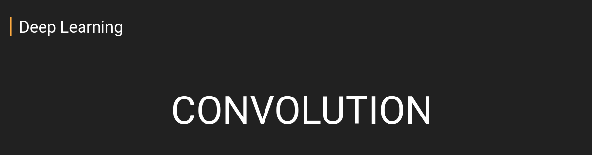
Table of Content
Abstract
Computer vision is a field of artificial intelligence (AI) that enables computers and systems to derive meaningful information from digital images, videos, and other visual inputs, then take actions or make recommendations based on that information.
Our focus here is using deep learning to help in computer vision field.

What made the jump to use deep learning in computer vision field?
- Feature Learning: Traditional computer vision methods often required manual engineering of features to represent patterns in images. Deep learning automates this process by learning features directly from data, eliminating the need for hand-crafted features and making the learning process more data-driven.
- Hierarchical Representations: Deep learning models can learn hierarchical representations of data. This mimics the hierarchical nature of visual information processing in the human brain, allowing models to learn intricate patterns and abstractions at different levels.
- End-to-End Learning: Deep learning enables end-to-end learning, where a model learns to perform a task directly from raw input to output. This contrasts with traditional pipelines that involved multiple steps, potentially leading to loss of information.
- Data Availability: The growth of digital data and the availability of large labeled datasets (e.g., ImageNet) provided the necessary resources to train deep neural networks effectively.
- Hardware Advances: The advancement of hardware, including GPUs (Graphics Processing Units), made it feasible to train and run deep neural networks efficiently, allowing researchers to tackle complex problems.
- Representation Power: Deep neural networks have the capacity to represent highly complex functions. This enables them to capture intricate patterns and relationships in images.
- Transfer Learning: Pretrained deep learning models can be fine-tuned for specific tasks, allowing researchers to leverage learned features from one task to another, even with limited data.
- Breakthroughs in Other Domains: Deep learning showed remarkable success in domains like speech recognition and natural language processing, motivating researchers to explore its potential in computer vision.
- Breakthrough Results: Deep learning models consistently achieved state-of-the-art performance in benchmark computer vision tasks, such as image classification, object detection, and segmentation.
- Flexibility and Adaptability: Deep learning models are highly adaptable and can be customized for different tasks without redesigning the entire pipeline.
- Neural Network Architectures: The development of novel neural network architectures, such as convolutional neural networks (CNNs), recurrent neural networks (RNNs), and transformers, specifically designed for handling structured data like images, played a significant role in driving the shift.
- Open Research and Collaboration: The open sharing of research, code, and models within the deep learning community facilitated rapid advancements and widespread adoption.
In essence, the combination of improved performance, increased availability of data, advances in hardware, and the emergence of innovative deep learning architectures converged to create a compelling case for researchers to embrace deep learning as a game-changing approach in computer vision
Motivation to Introduce Conveolution Concept
In real life, we deal with images with high resolution like 1000x1000 from a 1 Mega pixles camera, So that would be 3M vector of features for a deep neaural network to learn. So it is not optimal solution to use classic traditional neural network with images.
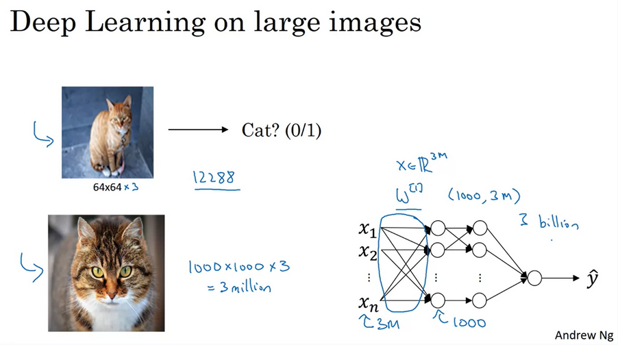
Convolution
What does convolution mean in math?
In mathematics, convolution is an operation that combines two functions to produce a third funcrion. It's mathematical concept often used in various fields, including signal processing, image processing, probability theory, and more.
The convolution operation involces integrating the product of two funcrions as one funcrion "slides" over the other. It's represneted by the symbol "*".
Mathematically, the convolution of two functions f and g is denoted as (f∗g)(f∗g) and is defined as:

Here's a breakdown of the terms in this formula:
- f and g are the two functions being convolved.
- t is the variable representing the output of the convolution.
- τ is a dummy variable used for integration.
- g(t−τ)g(t−τ) represents the second function gg shifted by τ units to the right. This effectively flips g and slides it over f.
- The integration is performed over all possible values of τ, which in the case of continuous functions, ranges from −∞ to +∞.
In practical terms, convolution helps in understanding how two functions interact when one is "slid" over the other, taking into account their overlapping values.
What is the different between correlation and convolution?
Correlation is measurement of the similarity between two signals/sequences. Convolution is measurement of effect of one signal on the other signal.
Convolution is to preserve the spatial relationship between pixels by learning image features in small lttle pathces of image data, like describing a nose in human face; That's why we don't enter the image as a vector, instead we enter it as a 2D matrix.
So To do, we need element multiplication between filtter & patch data.
What does 'slid' mean in convolution?
In the context of convolution operation, 'sliding' refers to the process of moving a filter (also known as kernal) across an input signal or image. This filter is usually a small matrix that represents a certain pattern or feature. As the filter slides or moves accross the input, it computes element-wise products with the overlapping portions of the input, and then sums up these products to produce an output value.

Imagine the input signal or image as a grid, and the filter as a smaller grid that you're placing on top of the input grid. When you slide the filter across the input grid, you align its elements with different portions of the input at each position. At each position, the element-wise products of the filter and the overlapping input values are computed and summed to produce a single value in the output grid.
Sliding the filter allows the convolution operation to capture local patterns, features, and relationships within the input. The distance by which you slide the filter at each step is called the "stride." The stride determines how much the filter moves between positions. A smaller stride means the filter moves in smaller steps, capturing finer details, while a larger stride skips more positions, capturing more general features.
Technical Note
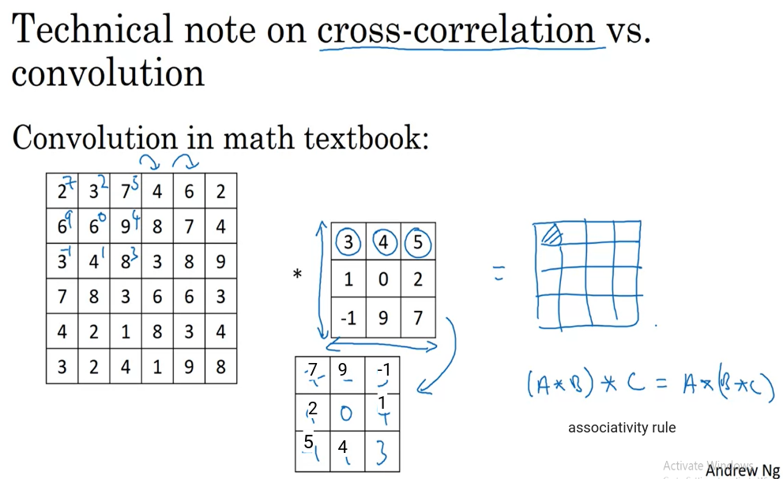
- In Math, Cross-correlation just a name they love to say for convolution.
- In math, convolution is just slip: “Flip Vertical then Flip Horizontal” the filter then do the element wise multiplication.
- A Funny fact, this slip is just to achieve the property of Association, but in convolution neural network, they do not this property.
- That’s why we don’t slip our filter in CNN.
Filter/Kernel
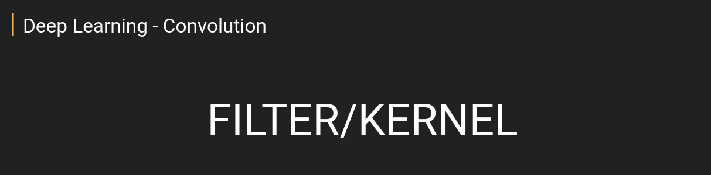
Let's explore more about the first function which slid over the input function, we call the slid function a "Filter/Kernel", and the other function which will be our input image. They both are metrics, which could have a variety of dimensions.
The filter is a specific feature extraction, some of them are designed to detect the edges in images, nose in face, or special shape in the image. As these filter are just a numeric matrix, so the value of the matrix defines the extracted feature after computing the convolution with the image.
Deep learning help in training and defining the matrix value of the filter to detect certain feature.
Vertical Edge Detector
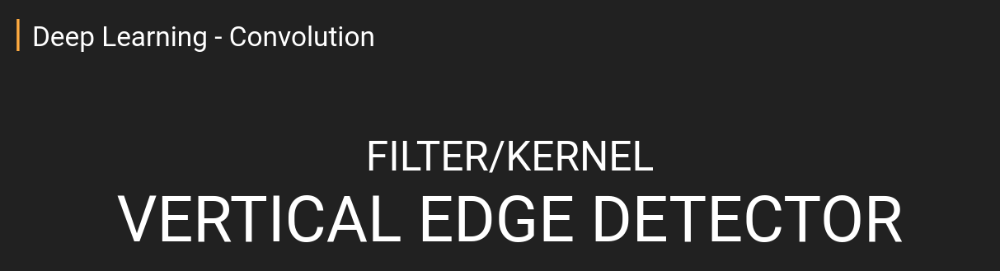
It is a convolution kernel that is used to detect vertical edges in an image. It is a 3x3 kernel that has all zeros except for the center element, which is 1. The kernel is applied to the image by multiplying each pixel in the image with the corresponding element in the kernel and then summing the results. The output of the convolution operation is a new image that highlights the vertical edges in the original image.Vertocal Edge filter must be have Bright Pixels in the left, and Dark Pixels in the right. We don't really care about the middle pixels
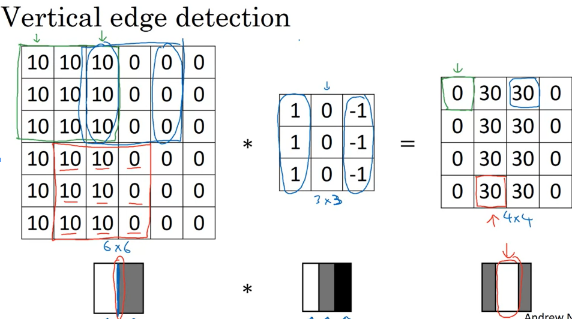
How to calculate the convolution ?
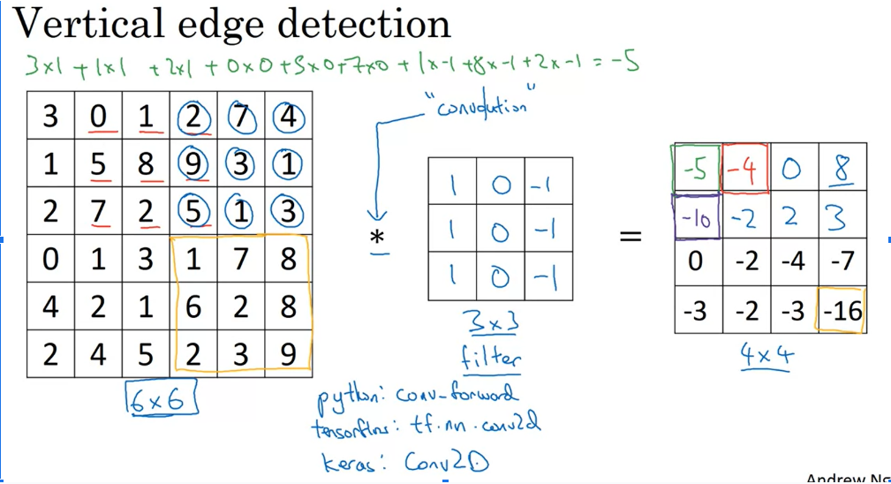
Examples
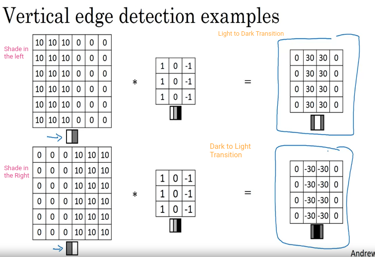
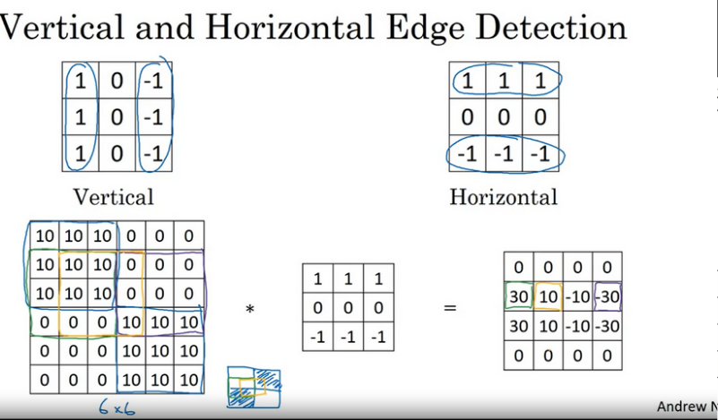
Learning to Detect Edges
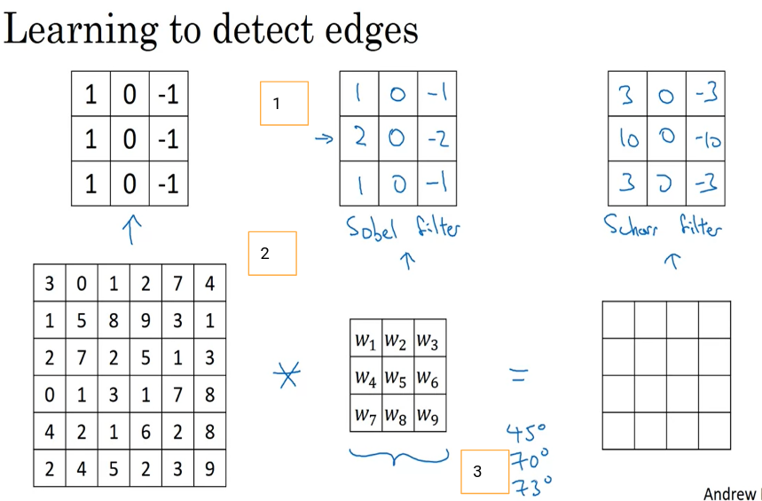
- There are other types of vertical edges filters; the advantage of this is it puts a little bit more weight to the central row, the central pixel, and this makes it maybe a little bit more robust.
- Use Neural Network to learn filter value for vertical filter using forward & backward propagation.
- Can even train the Neural Network to make filter that detect edges with line angle like 45, 70, or even 73 degrees.
Other Common Used Filters for Vertical Edge Detection
| Kernel | Matrix | Advantages | Disadvantages | When to Use |
|---|---|---|---|---|
| Sobel Vertical | -1 0 1<br>-2 0 2<br>-1 0 1 | - Emphasizes edges effectively<br>- Computationally efficient | - Sensitive to noise | General edge detection, real-time applications |
| Scharr Vertical | -3 0 3<br>-10 0 10<br>-3 0 3 | - Better edge preservation than Sobel<br>- More accurate gradients | - Similar to Sobel (some cases) | When accurate edges are crucial |
| Prewitt Vertical | -1 0 1<br>-1 0 1<br>-1 0 1 | - Simple and computationally efficient<br>- Detects edges well | - Some edge blurring | Quick edge detection with simple setup |
| Roberts Cross Vertical | 0 1<br>-1 0 | - Simple and computationally efficient<br>- Diagonal edge detection | - Limited accuracy in all directions | Limited space or quick edge detection |
| Canny (Directional Derivative) | Various | - High-quality edges with non-max suppression<br>- Performs well at low thresholds | - Computationally more intensive | High-quality edge detection, fine-tuning required |
Keep in mind that the Canny edge detector involves more than just a single kernel; it includes multiple steps such as Gaussian smoothing, gradient computation, non-maximum suppression, and hysteresis thresholding. The table provides a concise overview of these edge detection kernels' characteristics, but the choice of kernel should be based on the specific requirements and characteristics of the image data and the desired results
Padding
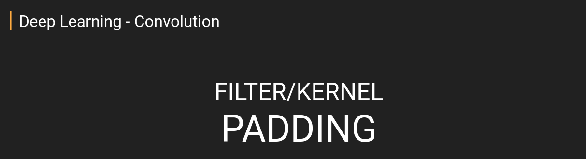
Problem statement
During the convolution process, the sliding filter does not actually visit all the pixels the same number of times, so not all the pixels in the images are treated the same by the filter, specially the pixels in the boundaries. This leads to a reduction in the spatial dimensions of the output. What if there is a whole dog in the pixels in the edge? So we want to make sure our model deals with every pixel equally.
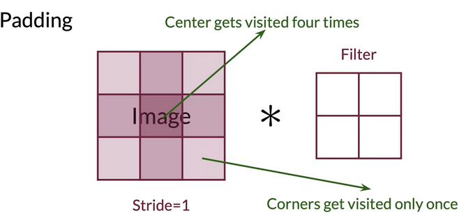
Padding Definition
So to solve this, w'll use padding; to make sure each pixel is visited same number of times.
Padding in the context of image processing and convolutional neural networks (CNNs) refers to the practice of adding extra pixels around the boundary of an image or feature map. Padding is used to control the spatial dimensions of the output after performing convolution or pooling operations.
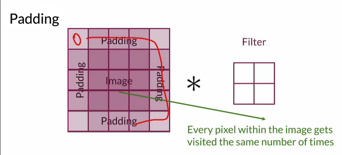
Why to Use Padding?
There are two problems happen to image:
- Doing convolution of image with a filter, the image shrinks in size.
- But we don't want the image to be shrinked every time we do edge detection or feature extraction.
- Assume we have 1000 layers, so we don't want the image to be shrinked in each layer.
- Pixels in the corner are less used compared to the ones in the center, where filter overlap that pixels multiple times.
That's why we use padding to solve this problems.
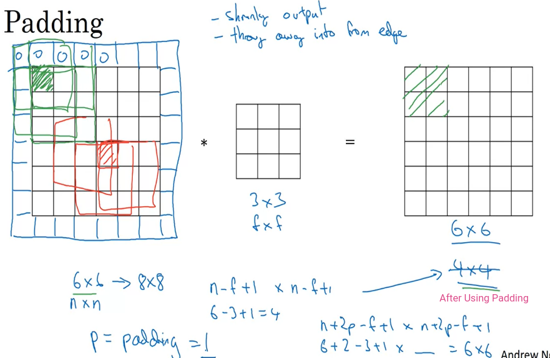
Output Shape After Padding
size of the image after convolution with a filter:
- Without Padding: n - f + 1
- With Padding: N + 2*p - f + 1
Types of Padding [Valid vs Same]
Valid (No Padding)
- The output shape of the image is shrinked, padding is not used.
- In valid padding, no extra pixels are added to the image or feature map before convolution. As a result, the spatial dimensions of the output feature map are smaller than those of the input. This can lead to a loss of information at the image boundaries
Same Padding
- The output shape is the same as the input shape, padding is used.
- In same padding, extra pixels are added around the input image or feature map so that the spatial dimensions of the output feature map remain the same as those of the input. This helps in retaining spatial information and makes it easier to stack multiple layers without significant loss of dimensionality.
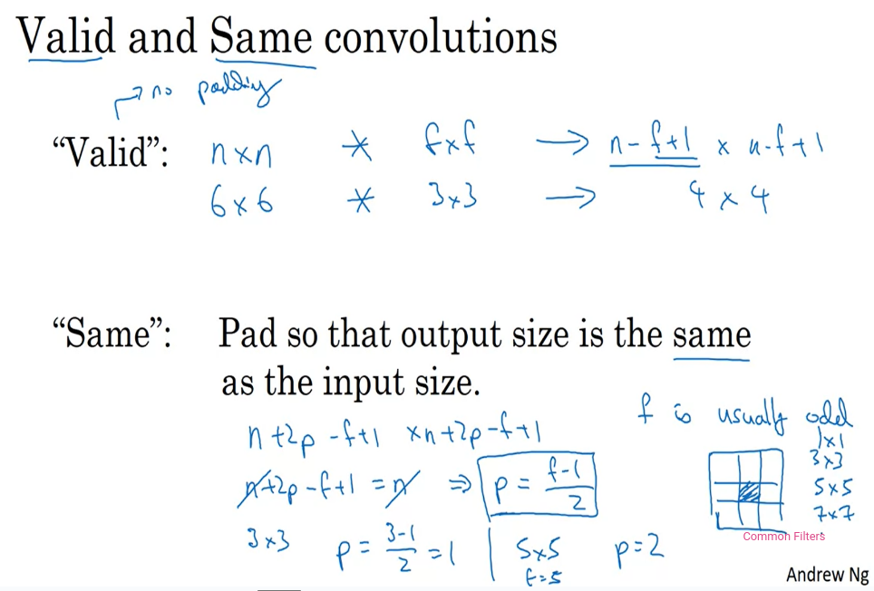
Importants of Padding
- It helps preserve spatial dimensions, which can be important for retaining contextual information and preventing information loss.
- It assists in centering the convolutional filter on the input pixels, which can improve feature extraction.
- It ensures that pixels at the image boundaries receive the same treatment as central pixels, reducing edge artifacts.
In the context of CNNs, padding is typically specified as a parameter when defining the architecture. The amount of padding added to each side of the input depends on the size of the filter and the chosen padding strategy
Technical Note: Odd-Sized Filters in 'SAME' Convolution
Filters are usually odd-sized, and Two reasons for that:
- Asymetric Padding:
- If filter is even, "f" is even, so you need to give asymmetric padding, which is not reasonable.
- More explaining: When applying a filter to an image, padding is often added to the image to maintain its spatial dimensions. If the filter size ('f') is an even number, applying symmetric padding would cause the filter to be centered directly on a pixel, leading to uneven padding on both sides. This is not reasonable because it would introduce an asymmetry that could affect the interpretation of the output. Therefore, using an odd-sized filter helps to ensure that symmetric padding can be applied, maintaining balance and consistency in the operation.
- Central Position and Distinguisher:
- Then it has a central position and sometimes in computer vision it's nice to have a distinguisher.
- More explaining: An odd-sized filter has a central position, which means there is a single pixel at the center of the filter. This central pixel helps in capturing the essence of the local information within the filter's receptive field. In computer vision tasks, having a central pixel aids in capturing symmetry and patterns in images. Additionally, using an odd-sized filter provides a clear distinguisher, making it easier to define a focal point and understand the structure of the filter.
Strided Convolution
In a standard convolution, a filter is applied to an input image by sliding it over the image with a fixed step size. Strided convolutions introduce the concept of a "Stride", which determines the step size at which the filter moves accros the input image.
How does it work?
In a traditional convolution operation:
- The filter is placed at the top-left corner of the image.
- The filter slides horizontally and vertically across the image pixel by pixel.
- At each position, the element-wise multiplication of the filter and the overlapping image region is computed, and the results are summed to form a single value in the output feature map.
With strided convolution:
- The filter is still placed at the top-left corner of the image.
- However, the filter slides across the image with a defined step size called the "Stride".
- At each stride position, the element-wise multiplication and summation occur as usual, producing an output value in the feature map.
Stride is represented by division in the equation; because it is the number of pixels that the kernel skips over when it is applied to the input image. For example, if the stride is 2, then the kernel will skip over 1 pixel in the input image for every 2 pixels that it scans.
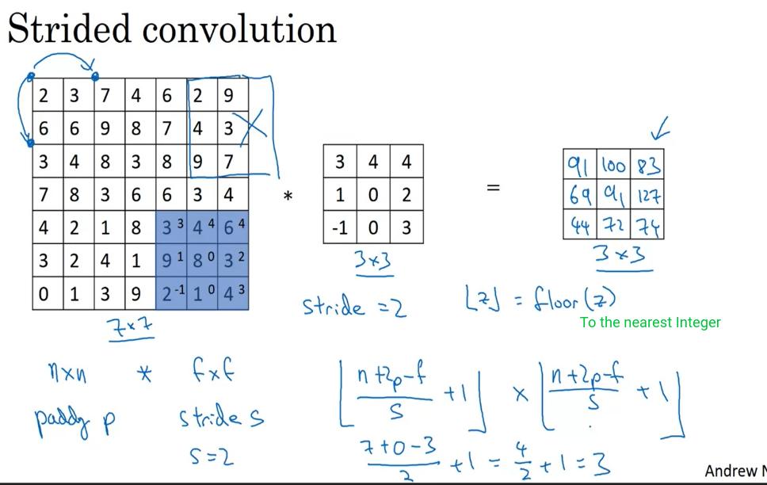
Remember that Striding is in Horizontal and Vertical axises.
Effect of Stide
The main effect of using a strode larger than 1 is a reduction in the spatial dimentions of the output feature map. A larger stride means the filter "Skips" over more pixels, leading to fewer output values. This reduction is spatial dimensions can be useful for downsampling or reducing computational complexity.
Why to use Stride?
For various reasons:
- Downsampling: Using a larger stride reduces the spatial resolution of the feature map, which can be useful for downsampling and dimensionality reduction in the networks.
- Reduced Computational Complexity: Larger strides results in fewer computations, making the process faster and less memory-intense.
- Feature Reduciotn: Strided convolutions can help reduce overfitting by forcing the network to capture more important features due to the reduced number of computations.
- Pooling Replacement: Strided convolutions can replace pooling layers in some architectures, offering more control over feature extraction.
Important Note
However, using larger strides can also lead to information loss, as some spatial details might be skipped over the filter.
Strided convolutions are often combined with other techniques like dilation, padding, and skip connections to mitigate these issues and maintain the network's ability to capture important features.
Volume Convolution
Dealing with Three channels Image
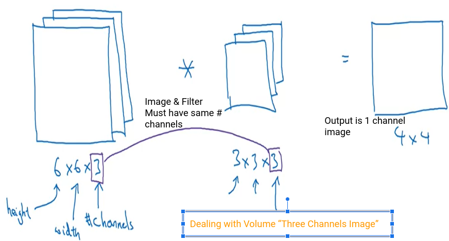
In this case, we will use filter that has same number of channels like the input image, and the output will be a single channel feature image.
Dealing with multiple Filters
What if we need to detect vertical & horizontal edges?, In this case we will use two filters:
- Yellow: Vertical Edge Detector -> Output is 1 channel.
- Orange: Horizontal Edge Detector -> Output is 1 channel.
Then Combine both outputs of the two filters together to make a two channel output.
- So Number of Channels in the output image = #Filters used.
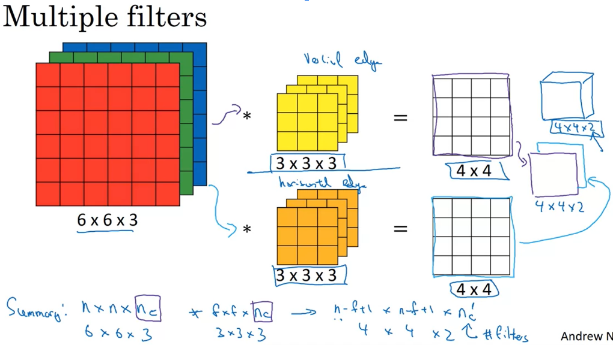
But remember that we are dealing with RGB image, which is a 3 channels image like in the image above (6 x 6 x 3), So in this case, each of the filters [yellow: vertical, orange: horizontal] will be also a 3 dimentional filter, so each channel of R, B, & G will have an applied filter on it.
Output Dimentions
To summarize the dimention like in the image:
n x n x n_c * f x f x n_c -> n-f+1 x n-f+1 x n_c`
6 x 6 x 3 3 x 3 x 3 4 x 4 x 2
Where:
n : input image shape dimention.
n_c : the number of channels.
* : Convolution operation.
f : filter shape dimention.
n_c` : Number of used filters.
Assuming padding = 0, stride = 1Convolution on RGB image
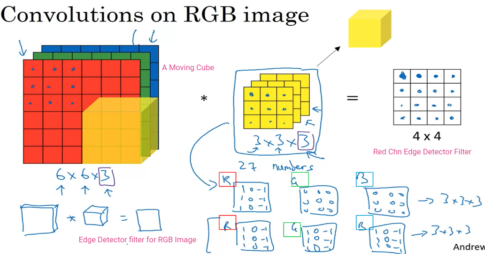
In this case, we will have a filter with three channels n_c = 3, as each channel will be will be convolutioned with its correponding image color channel, and the output will be a single channel.
For example illustrated above, we just need a red channel edge detector, then all other results from the convolution of the G, & B channels will be zeros.
One Layer Convolution Neural Network
When you convolute a filter with shape (3x3x3) with RBG image with shape (6x6x3), the output feature map image will be with shape (4x4x1), as we have only one filter applied to the image.
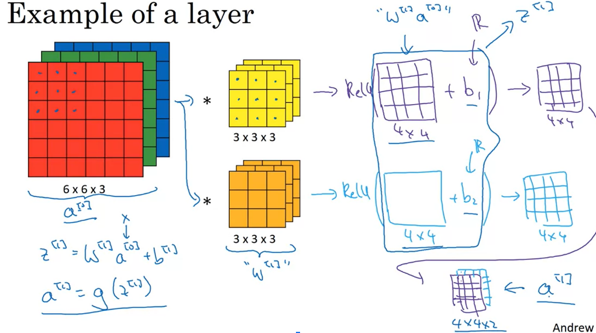
Let's see how this actually happens under the hood:
- The filter applied has a three channels, so each channel will be applied to each channel of the RGB image individually, each of the multiplication is element-wise, resulting in three separate feature maps (one for each channel). These feature maps represent the response of the filter to each color channel.
- Each of these features map are summed together into a single feature map which will have a shape of (4x4x1).
- Adding a bias term to the output.
- Applying activation function like Relu, to have a final output feature map.
Summary of Notation
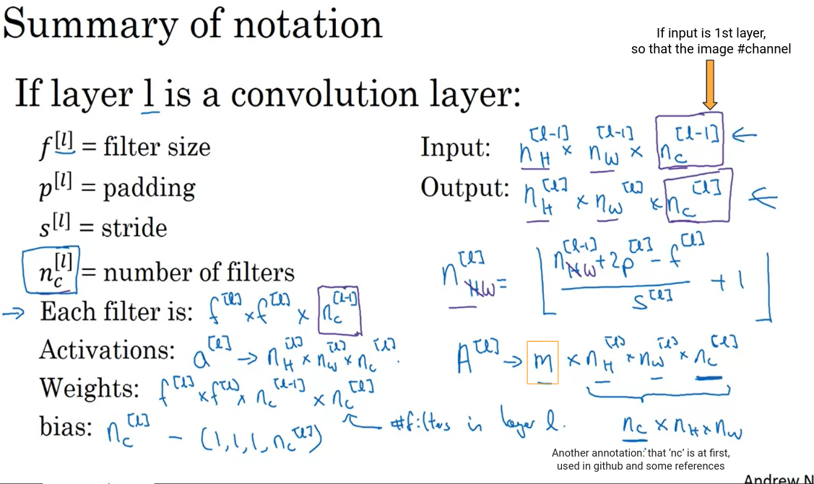
Where:
- M: Number of activation layers.
Number of Parameters Calculation
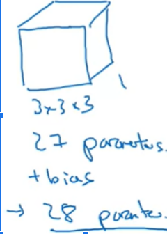
To calculate the total parameters required for training in the convolution neural network:
- Weights parameters = 3 * 3 * 3 = 27 parameters.
- Bias Term = 1
So the total number of parameters will = 27 + 1 = 28
One Layer Convolution - Multiple Filters
If we have two filters, how the convolutions work between an input image, and the two filters?
- The same approach to calculate the output feature image (n_H, n_W), for each filter individually, where each filter has shape (f, f, n_C_prev).
- Then stacking the filter outputs into one single output volume (n_H, n_W, n_C), where n_C is the number of filters which in this case will be equal to 2.
The figures below illustrate how the process works:
1- Calculating the output of the first applied filter.
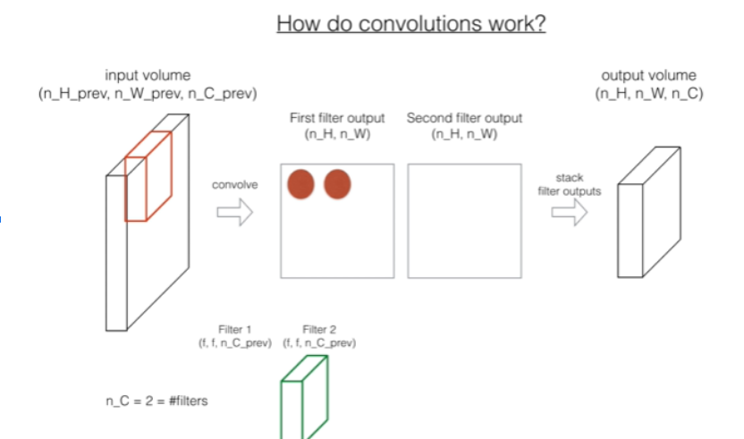
2- Calculating the second output from the second filter.
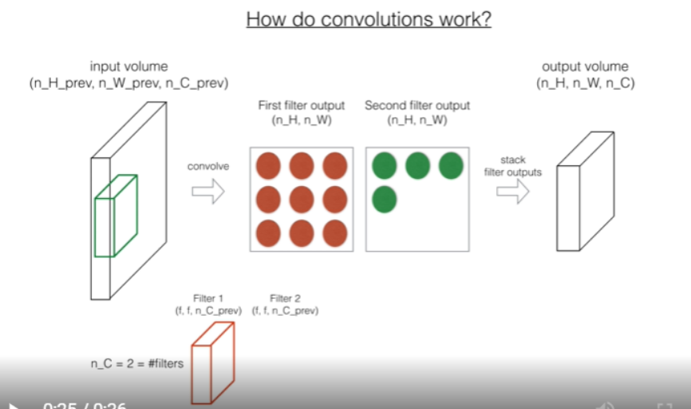
3- Stacking the two outputs together into single output volume with shape (n_H, n_W, n_C).
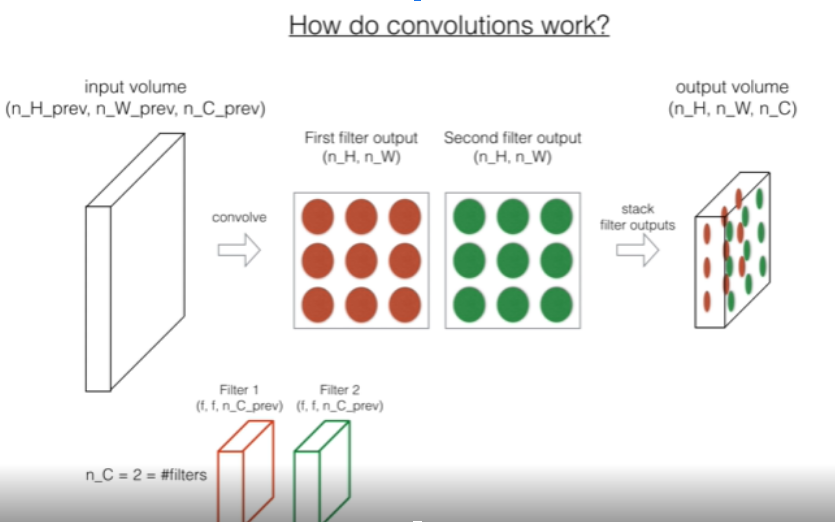
Numerical Example:
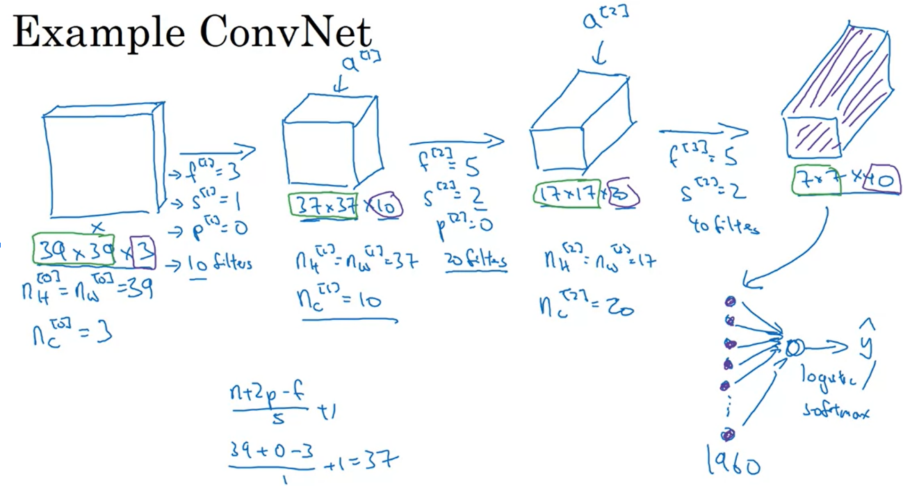
Note: As we go deep in CNN
- Image dimentions decrease.
- Number of filters increase.
Convolution Multiplication Visuale Example
A great guide for visual illustration described in the CS231n: Convolution Neural Networks for Visual Recognition
Pooling Layer
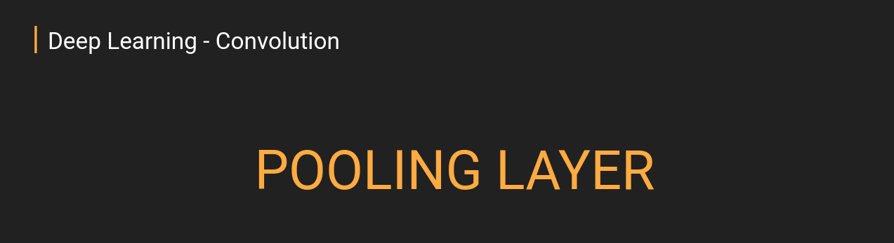
Pooling operates on individual feature maps produced by the convolutional layers. It replaces a group of adjacent pixels with a single value, thus reducing the spatial resolution of the feature map. The general idea is to capture the most important information while reducing the computational complexity and the risk of over-fitting So it is a technique to reduce the information in an image while maintaining features.
ConvNets often also use pooling layers to:
- reduce the size of the representation, to speed the computation.
- make some of the features that detects a bit more robust.
HyperParameters
Pooling layer has a set of hyperparameters:
- f : filter size.
- s : Stride size.
Pooling Layer has Hyperparameters to set, but don’t have a parameter to learn. (for ex. Nothing for gradient descent to learn)
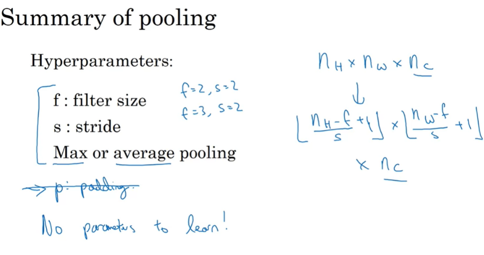
Types of Pooling
Max Pooling:
- In max pooling, each output value of the pooled feature map is the maximum value within the corresponding region of the input feature map.
- Max pooling helps preserve the most prominent features in a given region, making it effective for identifying spatial patterns regardless of their precise location.
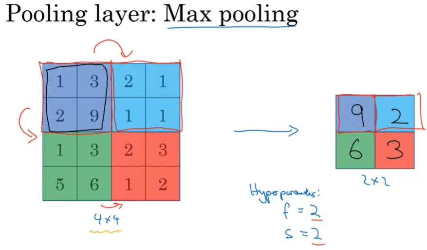
Average Pooling:
- In average pooling, each output value is the average of all values in the corresponding region of the input feature map.
- Average pooling can help mitigate noise and provide a more generalized representation.
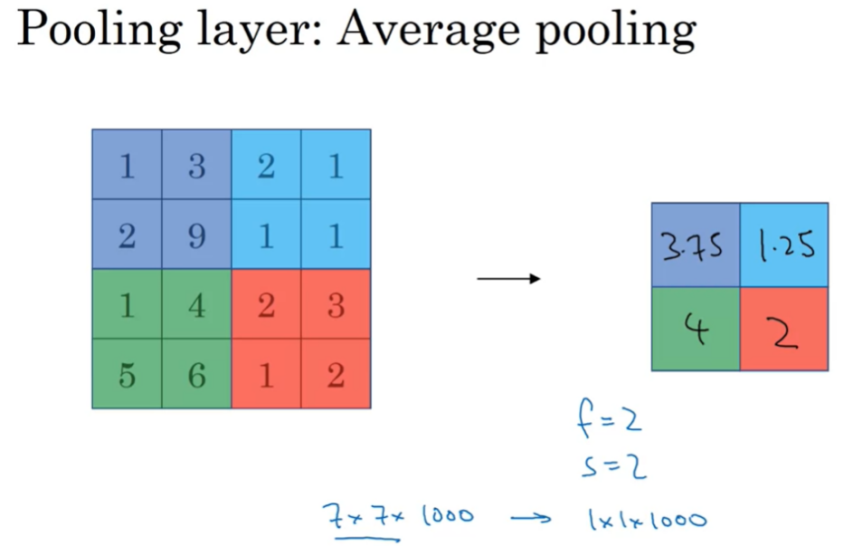
CNN Example
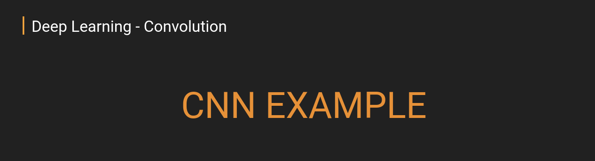
Let's take a fully CNN example which consists of a input of a RGB image, passing through the following architecture, which consists of [Convolution layer, pooling layer, a second convolution layer, a second pooling layer, a three fully conected layers, one final activation softmax function].
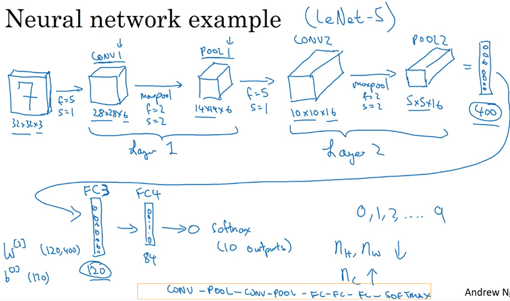
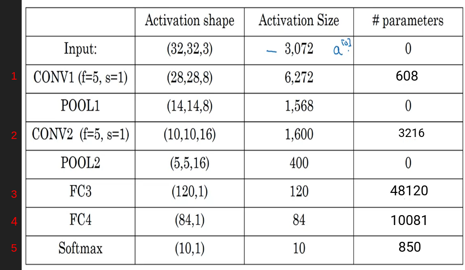
Remember: Each image (3 channels) go through each filter individually. Here are the 5 typos:
- (5 * 5 * 3 + 1) * 8 = 608; This "8" because the activation shape has 8 channels.
- (5 * 5 * 8 + 1) * 16 = 3216; This "16" because the activation shape has 16 channels.
- In the FC3, 400*120 + 120 (not 1) = 48120, since the bias should have 120 parameters, not 1.
- Similarly, in the FC4, 120*84 + 84 (not 1) = 10164
- Finally, in the softmax, 84*10 + 10 = 850
Note: Here, the bias is for the fully connected layer. In fully connected layers, there will be one bias for each neuron, so the bias become In FC3 there were 120 neurons so 120 biases.
Why Convolution
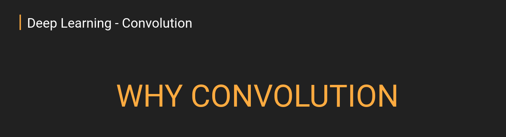
Compared to fully connected layer where if we pass an image, so all pixels are converted to a single vector, where each pixel has a neuron for it (assuming that), so for example if we have an image with shape [32 * 32 * 3] which equals to 3072 parameters + 3072 bias. So the convolution neuron network have in contrast a low number of parameters, which reduce the complexity of computation process, and also reduce over-fitting.
There are two most common reasons for why convolutions:
1- Parameters Sharing: means that the same set of learnable weights (parameters) is used for multiple positions within the input data. This concept is valuable in computer vision & image processing for the following task:
- Local Feature Detection: in images, local patters, such as edges, textures, and corners, often occur repeatedly in different regions. For instance, a feature detector (such as vertical edge detector) that's useful in one part of the image is probably useful in another part of the image. Parameter sharing allows a single set of weights to be applied across different parts of the image, making in possible for the network to learn to detect these local features more efficiently.
- Reduced Model Complexity: without parameter sharing, a fully connected layer would require a large number of unique parameters, especially when dealing with high-resolution images. This leads to a high computational & memory burden. Convolution layers alleviate this issue by reusing the same weights across the input, resulting in a much more compact model.
- Translation Invariance: parameters sharing contributes to a property called translation invariance. This means that the network can recognize the same feature or pattern regardless of its exact location in the input. For example, if an edge detector filter detects a vertical edge in one part of the image, it can also recognize the same vertical edge in a different location.
2- Sparsity of Connections: Convolutional layers enforce a sparsity of connections, which means that each output value depends only on a small, local subset of input values, unlike in a fully connected layer where each output node is connected to all input nodes.
The idea of sparsity of connections is that only the input nodes that are relevant to the output node need to be connected. By sparsifying the connections, the model can learn more efficiently
This sparsity has several advantages:
- Efficient Computation: With fully connected layers, every neuron in a layer is connected to every neuron in the preceding layer, resulting in a dense and computationally expensive architecture. In contrast, convolutional layers have sparse connections, which significantly reduce the number of computations required. This is especially important for processing large images efficiently.
- Local Receptive Fields: Convolutional layers use small, local receptive fields (the filter size) to extract features. This local receptive field ensures that each neuron in the feature map focuses on a specific region of the input, allowing it to capture local patterns and details. This property aligns well with the hierarchical nature of visual information processing.
- Feature Hierarchies: By stacking multiple convolutional layers, CNNs create a hierarchy of features. Lower layers detect basic features like edges and textures, while higher layers learn to recognize more complex patterns and objects. This hierarchical structure is crucial for representing visual information effectively.
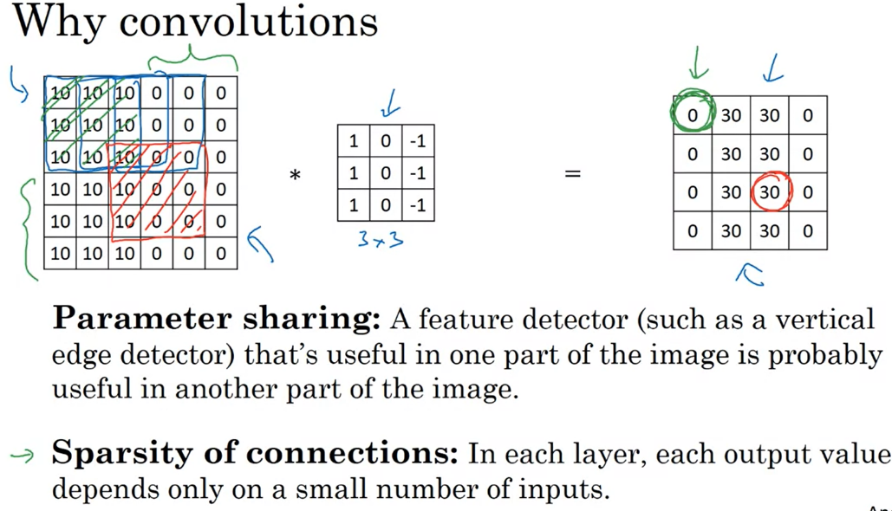
From the image above:
- Green circle - This value (zero) is only depend on the green square (convolution between filter and this part of image) only. So the rest of the image pixels don’t have effect.
- Red circle - Same thing happens to this value (30).
Transponsed Convolution
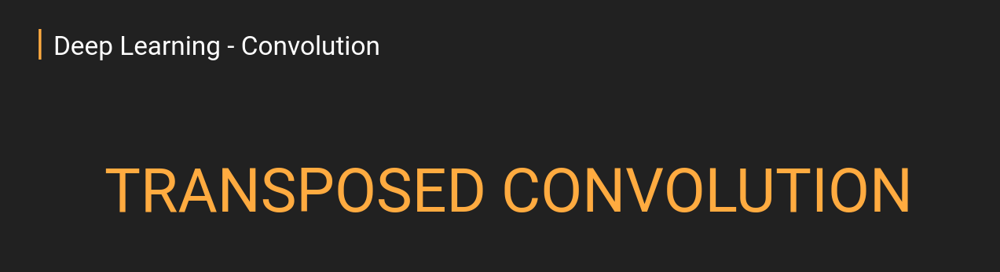
Transposed convolution is a type of convolution that is used to upsample an image. It is also known as deconvolution or fractionally strided convolution.
In a regular convolution, a kernel is used to scan an input image and produce an output image. The kernel is a small matrix of weights that is used to calculate the output value at each pixel in the output image. In a transposed convolution, the kernel is used to scan an output image and produce an input image. The kernel is used to upsample the output image by adding zeros in between the pixels.
Transposed convolution can be used for a variety of tasks, including image upsampling, image denoising, and image super-resolution.
Note: There is no learnable parameters here.
Upsampling: Nearest Neighbors
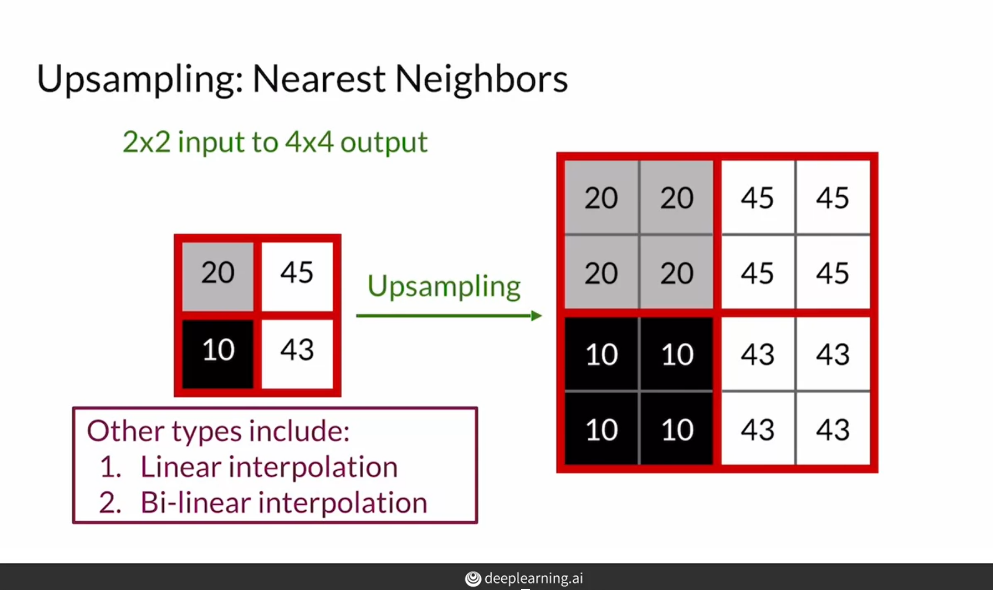
We have a feature map of shape 2 * 2, and require to be converted to 4 * 4 output matrix, in case of upsampling using nearest Neighbors, in the input matrix, each pixel is converted to a 2 * 2 matrix with same pixel value.
Checkboard Pattern
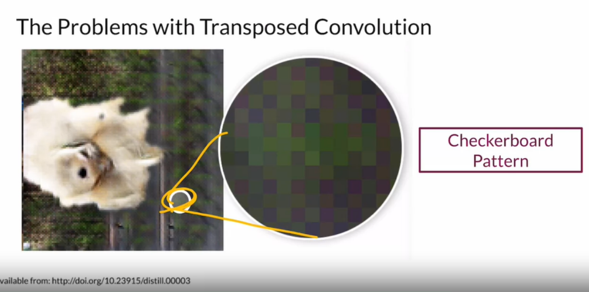
When doing the upsampling of an image, like the one above, the image looks like it is pixlated, which can be described by "Checkboard pattern", this is one of the problem of transposed convolution.
This problem happenes because some pixels are influenced much more heavily by other pixels, while the one around it are not. Let's dig into the image below, assume we have in image of 2 * 2 pixels, and using a filter of shape 2 * 2, and stride = 1, we want to output an image of shape 3 * 3.
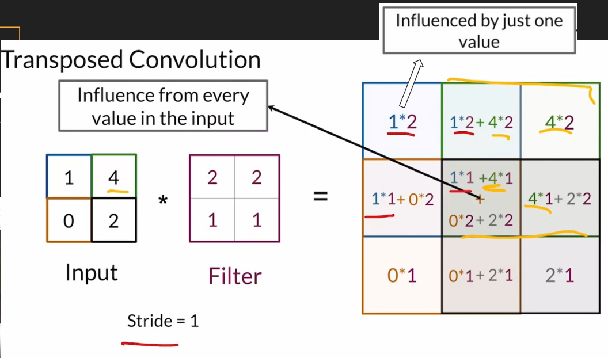
In this case, while calculating, output pixels are affected by various of the filter pixels, unsymetric effect, for example, the pixel in the left up corner is only affected by the value 2 in left ip corner of the filter, compared to the output centered pixel which is affected by all pixels of the filter.
Multiple Input
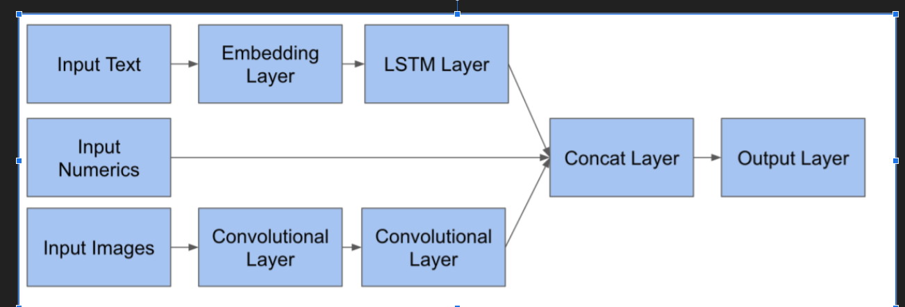
The image shows a diagram of a system with multiple inputs. The system takes in three types of data: text, numerics, and images. The image data is processed by a convolutional neural network (CNN), the text data is processed by a recurrent neural network (RNN), and the numeric data is fed directly into the fully connected layer. The outputs of the three networks are then combined to produce a final output.
Multiple input is a type of input that allows a computer to process multiple types of data at the same time. This can be useful for tasks that require the processing of different types of data, such as natural language processing, machine translation, and image recognition.
In the case of the system shown in the image, the multiple input allows the system to process text, numerics, and images data at the same time. This can be useful for tasks such as sentiment analysis, which involves understanding the sentiment of text, or image classification, which involves classifying images into different categories.
Multiple input can be implemented in a variety of ways. One way is to use a single neural network that has multiple inputs and outputs. Another way is to use multiple neural networks, each of which is specialized in processing a single type of data.
The choice of implementation depends on the specific task and the available resources.
Case Studies: Classic Networks
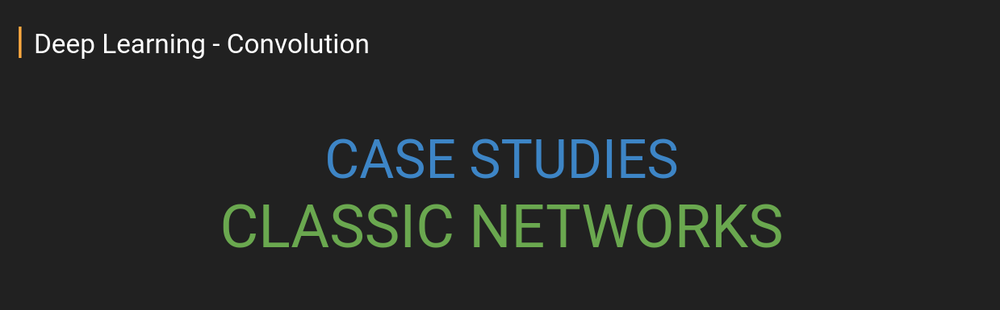
LeNet-5
LeNet-5 is a convolutional neural network (CNN) architecture developed by Yann LeCun et al. in 1998. It is a simple and efficient CNN that has been used for a variety of tasks, including handwritten digit recognition and face detection.
Paper: Gradient-Based Learning applied to document recognition, was released in 1998, by LeCun.
Architecture
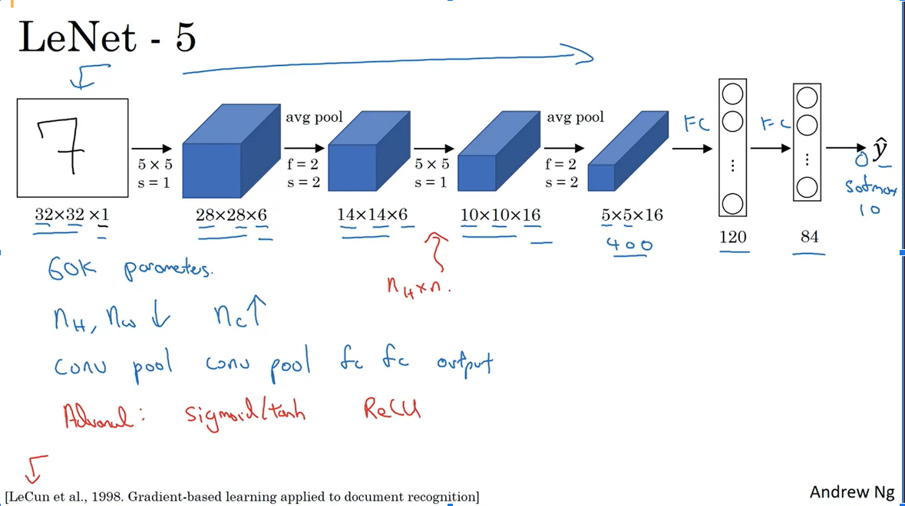
The LeNet-5 architecture consists of seven layers:
- Input layer: This layer takes in the input image. The input image is a 32x32 grayscale image.
- Convolutional layer: This layer applies a convolution operation to the input image. The convolution operation uses a filter to extract features from the input image.
- Avg pooling layer: This layer downsamples the output of the convolutional layer. The average pooling operation takes the average value from each patch of the output of the convolutional layer.
- Convolutional layer: This layer applies another convolution operation to the output of the ReLU layer.
- Avg pooling layer: This layer downsamples the output of the second convolutional layer.
- Fully connected layer: This layer connects all of the neurons in the previous layer to a single neuron. The output of the fully connected layer is the classification of the input image.
Pros & Cons
Lenet-5 is a simple and efficient CNN that has been used for a variety of tasks. It is a good starting point for understanding CNNs and for developing your own CNN architectures.
Here are some of the advantages of LeNet-5:
- It is simple and efficient.
- It has been used for a variety of tasks.
- It is a good starting point for understanding CNNs.
Here are some of the disadvantages of LeNet-5:
- It is not as powerful as some of the newer CNN architectures.
- It is not as well-suited for large-scale image classification tasks.
Overall, LeNet-5 is a good choice for simple image classification tasks. It is easy to understand and implement, and it has been used successfully for a variety of tasks.
AlexNet
AlexNet is a convolutional neural network (CNN) architecture developed by Alex Krizhevsky, Ilya Sutskever, and Geoffrey Hinton in 2012. It is a deep CNN, with eight layers, and it was the first CNN to achieve state-of-the-art results on the ImageNet Large Scale Visual Recognition Challenge (ILSVRC) in 2012.
Paper: ImageNet Classification with Deep Convolutional Neural Networks
Architecture
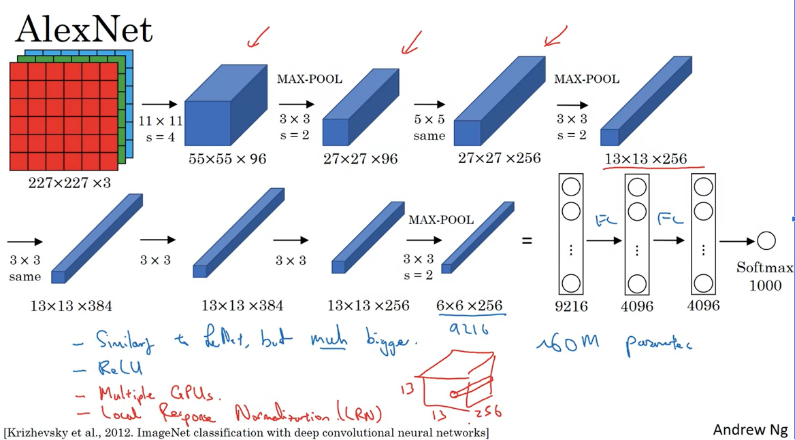
AlexNet is a convolutional neural network (CNN) architecture developed by Alex Krizhevsky, Ilya Sutskever, and Geoffrey Hinton in 2012. It is a deep CNN, with eight layers, and it was the first CNN to achieve state-of-the-art results on the ImageNet Large Scale Visual Recognition Challenge (ILSVRC) in 2012.
The AlexNet architecture consists of the following layers:
- Input layer: This layer takes in the input image. The input image is a 224x224 RGB image.
- Convolutional layer: This layer applies a convolution operation to the input image. The convolution operation uses a filter to extract features from the input image.
- Max pooling layer: This layer downsamples the output of the convolutional layer. The max pooling operation takes the maximum value from each patch of the output of the convolutional layer.
- ReLU layer: This layer applies the rectified linear unit (ReLU) activation function to the output of the max pooling layer. The ReLU activation function is a non-linear function that helps to improve the learning of the CNN.
- Convolutional layer: This layer applies another convolution operation to the output of the ReLU layer.
- Max pooling layer: This layer downsamples the output of the second convolutional layer.
- Fully connected layer: This layer connects all of the neurons in the previous layer to a single neuron. The output of the fully connected layer is the classification of the input image.
- Dropout layer: This layer randomly sets a fraction of the neurons to zero. This helps to prevent overfitting.
AlexNet is a deep CNN, and it is more powerful than LeNet-5. It was the first CNN to achieve state-of-the-art results on the ILSVRC (explained below), and it has been used as a baseline for many other CNN architectures.
Some notes to highlight:
- Similar to LeNet, but much bigger.
- Adding Relu Activation function layer.
- Require Multiple GPU for training.
- Local Response Normalization "LRN", explained below.
Pros & Cons
Here are some of the advantages of AlexNet:
- It is deep and powerful.
- It achieved state-of-the-art results on the ILSVRC.
- It has been used as a baseline for many other CNN architectures.
Here are some of the disadvantages of AlexNet:
- It is computationally expensive to train and deploy.
- It is not as well-suited for small-scale image classification tasks.
Overall, AlexNet is a powerful CNN architecture that has been used for a variety of tasks. It is a good starting point for understanding deep CNNs and for developing your own CNN architectures.
ILSVRC
The ImageNet Large Scale Visual Recognition Challenge (ILSVRC) is an annual competition in image classification and object detection. The competition is held by the ImageNet project, which is a large-scale dataset of images with human-annotated labels.

The ILSVRC was founded in 2010, and it has been held annually since then. The competition has been instrumental in the development of deep learning, as many of the most successful deep learning models have been developed for the ILSVRC.
The ILSVRC has two main tracks: image classification and object detection. The image classification track involves classifying images into one of 1,000 object categories. The object detection track involves detecting and classifying objects in images.
The ILSVRC is a challenging competition, and the accuracy of the winning entries has improved significantly over the years. The first winner of the image classification track achieved an accuracy of 74.8%, while the winner of the 2021 competition achieved an accuracy of 96.2%.
The ILSVRC is a valuable resource for the development of deep learning models. The competition provides a benchmark for evaluating the performance of new models, and it has helped to drive the development of more accurate and efficient models.
Local Response Normalization "LRN"
Local Response Normalization (LRN) is a technique used in convolutional neural networks (CNNs) to normalize the responses of neurons within a local region of the network. This helps to prevent the network from learning features that are too localized and to improve the generalization of the network.
- It's a contrast enhancement process for feature maps in convNets.
LRN is used in the AlexNet CNN architecture. It is applied after each convolution layer in the network. The LRN operation takes the output of the convolution layer and divides it by a normalized sum of the outputs of the neurons in a local region. The local region is defined by a window size and a stride. The window size is the number of neurons that are considered in the local region, and the stride is the number of neurons that are skipped when moving from one local region to the next.
The formula for LRN is:
output = input / (k * sum(input^2) + eps)
where:
- input is the output of the convolution layer
- k is a constant
- sum(input^2) is the sum of the squared outputs of the neurons in the local region
- eps is a small constant to prevent division by zeroThe LRN operation has two main effects:
- It reduces the activations of neurons that are responding to similar inputs. This helps to prevent the network from learning features that are too localized.
- It increases the activations of neurons that are responding to different inputs. This helps to improve the generalization of the network.
LRN has been shown to be effective in improving the performance of CNNs on a variety of tasks, including image classification and object detection. However, it has also been shown to be computationally expensive, and it can sometimes lead to overfitting.
In recent years, LRN has been replaced by other normalization techniques, such as batch normalization and layer normalization. These techniques are more computationally efficient and have been shown to be more effective in improving the performance of CNNs.
VGG-16
Vgg-16 is a convolution neural network (CNN) architecture developed by Karen Simonyan and Andrew Zisserman at the University of Oxford in 2014. It is a deep CNN, with 16 layers, and it was the runner-up in the ImageNet Large Scale Visual Recognition Challenge (ILSVRC) in 2014.
Paper: Very Deep Convolution Networks for Large-Scale Image Recognition, by Simonyan & Zisserman in 2015.
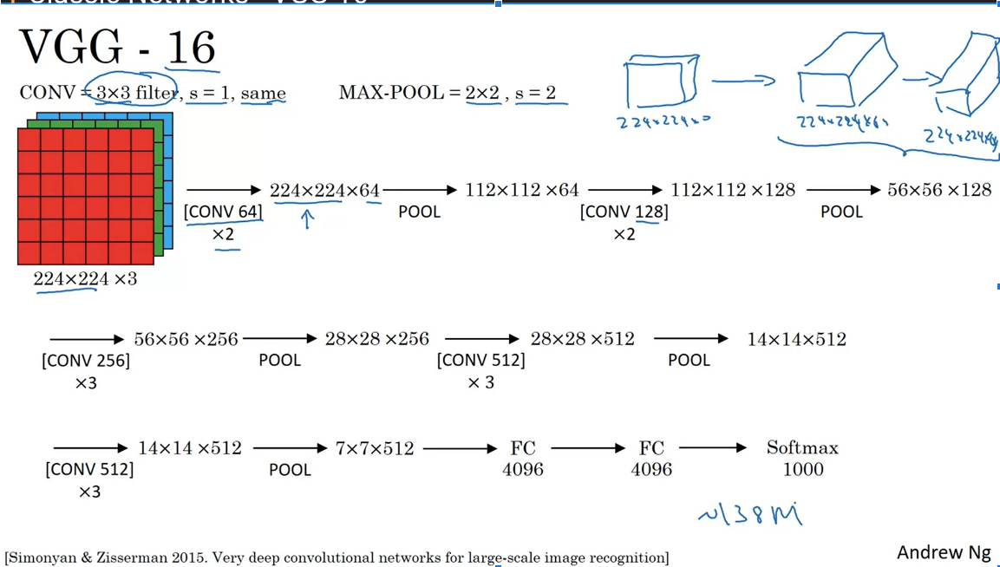
Architecture
- Input layer: This layer takes in the input image. The input image is a 224x224 RGB image.
- Convolutional layer: This layer applies a convolution operation to the input image. The convolution operation uses a filter to extract features from the input image.
- Max pooling layer: This layer downsamples the output of the convolutional layer. The max pooling operation takes the maximum value from each patch of the output of the convolutional layer.
- ReLU layer: This layer applies the rectified linear unit (ReLU) activation function to the output of the max pooling layer. The ReLU activation function is a non-linear function that helps to improve the learning of the CNN.
- Convolutional layer: This layer applies another convolution operation to the output of the ReLU layer.
- Max pooling layer: This layer downsamples the output of the second convolutional layer.
- Repeat steps 4-6: This is repeated five more times.
- Fully connected layer: This layer connects all of the neurons in the previous layer to a single neuron. The output of the fully connected layer is the classification of the input image.
Insigts:
- Has more learnable parameters around 138M.
Pros & Cons
Here are some of the advantages of VGG-16:
- It is deep and powerful.
- It achieved second place in the ILSVRC.
- It has been used as a baseline for many other CNN architectures.
Here are some of the disadvantages of VGG-16:
- It is computationally expensive to train and deploy.
- It is not as well-suited for small-scale image classification tasks.
Comparison between Classic Networks
| Characteristic | LeNet | AlexNet | VGG-16 |
|---|---|---|---|
| Year | 1998 | 2012 | 2014 |
| Depth (Number of Layers) | Shallow (7 layers) | Deeper (8 layers) | Deep (16 layers) |
| Convolutional Layers | Yes | Yes | Yes |
| Max-Pooling Layers | Yes | Yes | Yes |
| Activation Function | Sigmoid & Tanh | ReLU | ReLU |
| Fully Connected Layers | Yes (2 FC layers) | Yes (3 FC layers) | Yes (3 FC layers) |
| Local Receptive Fields | Smaller | Larger | Smaller |
| Convolutional Filters | Smaller (5x5, 3x3) | Larger (11x11, 5x5) | Smaller (3x3) |
| Pooling Type | Average Pooling | Max-Pooling | Max-Pooling |
| Regularization | Dropout | Dropout | Dropout |
| Batch Normalization | No | No | Yes |
| Achievements | Handwritten Digits | ImageNet Competition | ImageNet Competition |
Key takeaways:
- Depth: LeNet is relatively shallow compared to AlexNet and VGG-16. AlexNet has more layers than LeNet, while VGG-16 is even deeper, with 16 weight layers.
- Activation Function: LeNet uses Sigmoid and Tanh activation functions, while AlexNet and VGG-16 use Rectified Linear Unit (ReLU) activations.
- Convolutional Filters: LeNet and VGG-16 use smaller 3x3 filters, while AlexNet employs larger 11x11 and 5x5 filters.
- Pooling Type: LeNet uses average pooling, AlexNet uses max-pooling, and VGG-16 also employs max-pooling.
- Regularization: All three models use dropout as a regularization technique to prevent overfitting.
- Receptive fields: represent the region of the input data that each neuron in a layer is sensitive to.
- Batch Normalization: VGG-16 incorporates batch normalization to stabilize training and improve convergence.
- Achievements: LeNet pioneered CNNs for handwritten digit recognition. AlexNet won the ImageNet competition and popularized deep learning. VGG-16 further improved ImageNet classification accuracy, establishing deeper networks as a standard in computer vision.
Each of these models contributed to the advancement of deep learning in computer vision, and their characteristics highlight the evolution of neural network architectures over time.
Case Studies: Residual Neural Networks
Residual Network (ResNet) is a type of convolutional neural network (CNN) that uses residual connections to allow the network to learn deeper architectures without the risk of vanishing gradients.
Residual connections are connections that skip over one or more layers in the network. These connections allow the output of a layer to be added directly to the input of the next layer. This helps to prevent the gradients from vanishing as the network becomes deeper.
ResNet was the first CNN architecture introduced the "Residual Block" (explained below), after that other CNN architectures started using this blocks like: DenseNet and InceptionNet.
ResNet was introduced by He et al. in 2015. It won the ImageNet Large Scale Visual Recognition Challenge (ILSVRC) in 2015 and 2016.
Paper: Deep Residual Learning for Image Recognition, by He et al, in 2015.
Vanishing Gradient in CNN
The vanishing gradient is a problem that occur in deep learning when the gradient, of the loss function with respect to the parameters of the network, become very small as the network becomes deeper. This can make it difficult for the network to learn, as the updates to the parameters become very small.
The vanishing gradient problem occurs in CNNs because of the way that convolutions are performed. Convolutions involve multiplying the input image by a filter, and then summing the results. This operation can be thought of as a weighted sum of the input pixels.
The weights of the filter are learned during the training. However, as the network becomes deeper, the weights of the filter become smaller. This is because the filter is applied to a smaller and smaller patch of the input image.
As the weights of the filter become smaller, the gradients of the loss function with respect to the weights also become smaller. This can lead to the vanishing gradient problem.
Residual Block
A residual block consists of two convolution layers, followed by a ReLU activation function. The output of the first convolution layer is added to the output of the second convolution layer. This is called the residual connection.
The residual connection helps to prevent the vanishing gradient problem by adding a shortcut from the input of a layer to the output of the layer. This shortcut allows the gradients to flow through the network even if the weights of the filters become very small.
Note: in the image below, Andrew was explaining the residual block on two fully connected layers instead of ConvNet, for just explaining the connection for simplicity.
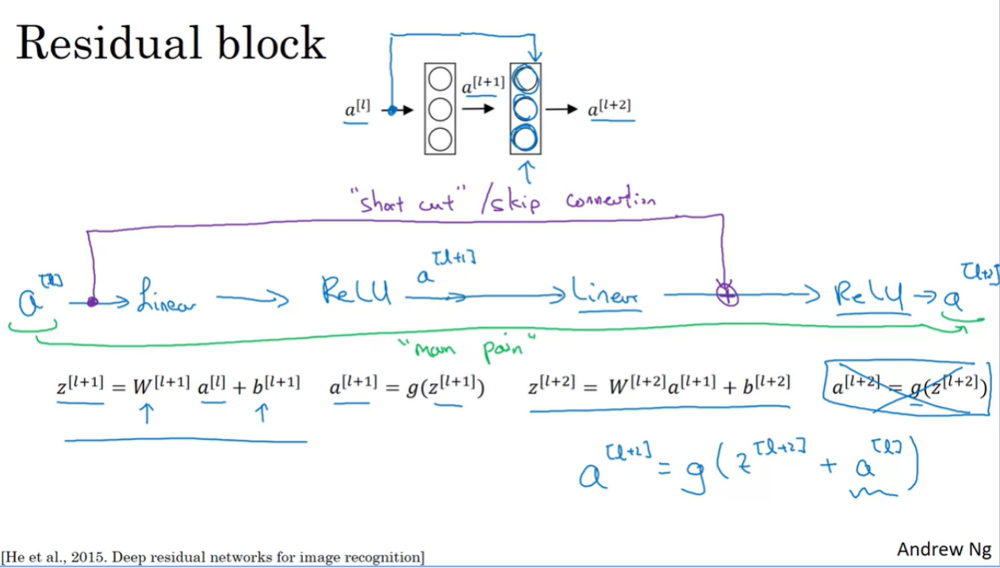
During calculating the weights, the equations become the follwoing:
z[l+1] = W[l+1] a[l] + b[l+1]
a[l+1] = g(z[l+1]) -> this is the plain cnn network.
z[l+2] = W[l+2] a[l+1] + b[l+2]
a[l+2] = g(z[l+2] + a[l])
Where:
- z[l+1]: the output before the activation function.
- W[l+1]: The weight of the next layer.
- a[l]: Input activation function of the current layer.
- b[l+1]: Bias of the next layer.
- a[l+1]: Activation function of the next layer.Architecture
The ResNet architecture consists of a stack of residual blocks. Each residual block consists of two convolution layers, followed by a ReLU activation function. The output of the first convolution layer is added to the output of the second convolution layer.
This has a better performance in the training error compared to the plain cnn network without a residual block.
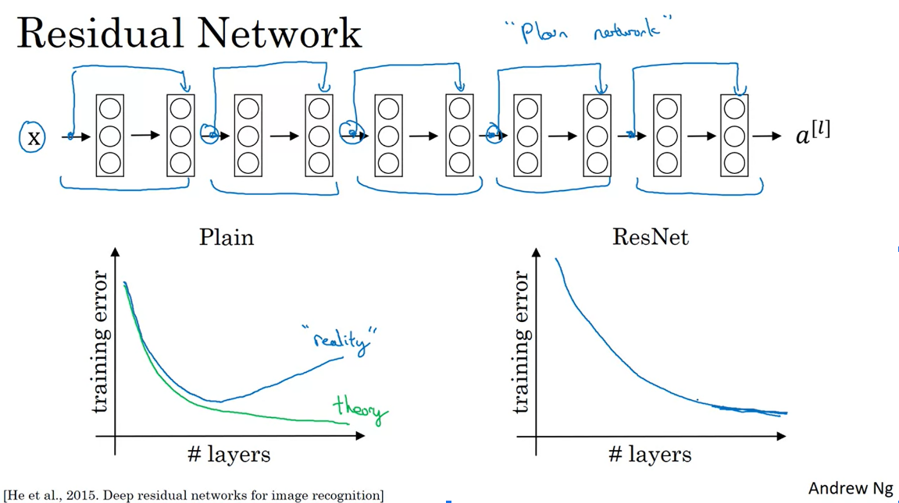
The ResNet architecture can be made deeper by stacking more residual blocks. The deeper the network, the more features it can learn. However, a deeper network is also more difficult to train.
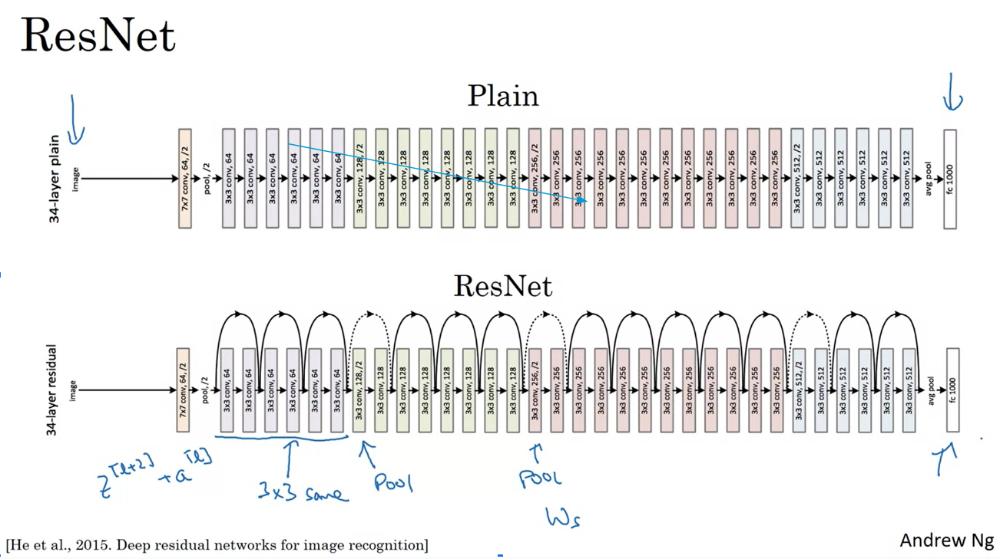
The basic architecture of ResNet as follows:
Input layer
Residual block 1
Residual block 2
...
Residual block n
Output layerThe number of residual blocks can vary depending on the specific ResNet model. For example, ResNet-50 has 34 residual blocks, while ResNet-101 has 101 residual blocks.
Why do residuals networks work?
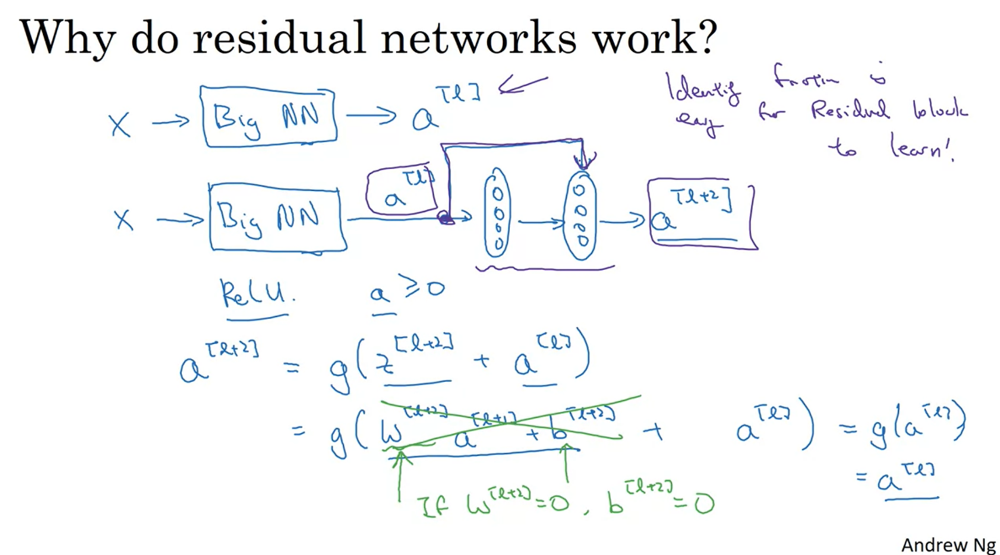
In the last line in the image above, when the weigth & bias of the next layer are zeros, the the value of the output of activation function is still not zero, as there is another input which is the activation function of the first layer.
- Weights --> zero, if using regularization.
- Bias --> zero, if using decaying bias.
So The ResNet skip connection makes the network to work like a normal big NN above. This even can improve the performance; if we traied to make the hidden layers learn something helpful like feature extractions and not just doing identity function (explained below).
- As the residual connection allows the output of the first convolution layer to be added directly to the output of the second convolution layer. This means that the second convolution layer can learn to do something helpful, such as feature extraction, without having to learn to undo the work of the first convolution layer.
- For example, the first convolution layer might learn to extract edges from an image. The second convolution layer could then learn to combine these edges to form more complex features, such as shapes or objects. The residual connection ensures that the second convolution layer does not have to learn to undo the work of the first convolution layer, and can focus on learning more complex features.
Identiy Function
An identity function is a function that takes an input and returns the same input. In other words, f(x) = x for all values of x.
In the context of ResNet, the identity function refers to a residual block that does not perform any convolution operations. The output of the first convolution layer is simply added to the output of the second convolution layer. This means that the second convolution layer does not have to learn to do anything, and simply passes the input through unchanged.
Pros & Cons
Here are some of the advantages of ResNet:
- It is able to learn deeper architectures without the risk of vanishing gradients.
- It has achieved state-of-the-art results on a variety of tasks, including image classification, object detection, and segmentation.
Here are some of the disadvantages of ResNet:
- It is computationally expensive to train and deploy.
- It is not as well-suited for small-scale image classification tasks.
Popular Models
Here are some of the popular ResNet models:
- ResNet-18: This is the smallest ResNet model. It has 18 layers.
- ResNet-34: This is a slightly deeper ResNet model. It has 34 layers.
- ResNet-50: This is a popular ResNet model. It has 50 layers.
- ResNet-101: This is a deeper ResNet model. It has 101 layers.
- ResNet-152: This is the deepest ResNet model. It has 152 layers.
These are just a few of the many ResNet models that have been developed. The choice of model depends on the specific task and the available resources.
Case Studies: Inception Networks
Abstract
The Inception Network, often referred to as GoogLeNet, was motivated by the need to address two main challenges in deep neural networks: computational efficiency and the vanishing gradient problem when training very deep networks. The key insight that led to the inception of this network was the use of 1x1 convolutions in a multi-path architecture.
Paper: Going Deeper with Convolutions, by Szegedy in 2014.
1x1 Convolution
A 1x1 convolution, also known as a pointwise convolution or network-in-network, is a type of convolution operation where the filter size is 1x1. Unlike standard convolutional operations that capture spatial patterns, a 1x1 convolution operates on individual pixels or elements in the input tensor and performs channel-wise (depth-wise) operations. It effectively acts as a linear transformation on the input channels.
Here's how a 1x1 convolution works:
- For each output channel, it computes a weighted sum of the input channels at the corresponding spatial position, with each weight learned during training.
- It can be thought of as a form of feature aggregation and transformation that combines and reweights the information from the input channels.
In the image below, an example of using a 1x1 convolution, where the feature image with size [28 x 28 x 192], with 32 filter with size [1 x 1 x 192], then the output feature map will have size [28 x 28 x 32].
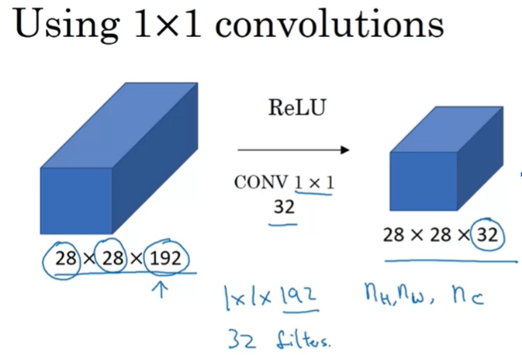
Let's go deeper to fully understand, let's assume we have a filter with size [1 * 1 * 32], and value of '2'. This filter will be convoluted with feature map of size [6 x 6 x 32], so the output feature map will have size [6 * 6 * nc], where the nc is the number of filters used in the convolution proccess. This filter is combined with an activation function Relu to introduce the non-linearity.
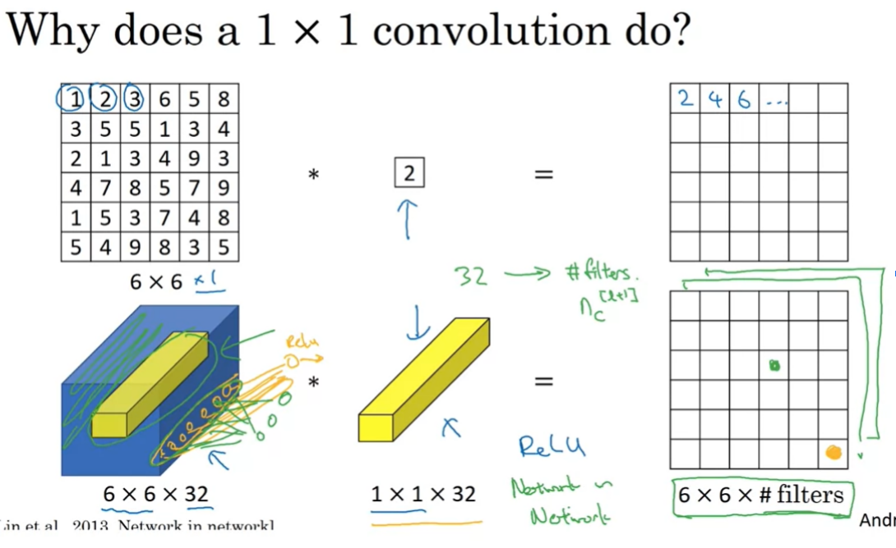
1x1 convolutions are particularly useful for several reasons:
- Dimension Reduction: By controlling the number of output channels in a 1x1 convolution layer, you can effectively reduce the dimensionality of the feature maps. This can be valuable for reducing computational complexity and model size in deep neural networks.
- Feature Combination: 1x1 convolutions allow feature maps to be combined and mixed at different depths in the network. This can lead to the creation of more complex features by combining information from multiple input channels.
- Non-Linearity: While each 1x1 convolution operation is linear, when combined with activation functions like ReLU, they introduce non-linearity into the network, enabling it to capture complex relationships between features.
Motivation for Inception Network
Inception Network says “Let’s do them all”. Adjusting each filter so the output have the same size. All the outputs from each filter are stacked together. The problem here is the “Computational Cost”.
For example, The computational Cost for 5x5 filter:
- 32 filter for Conv-Padding layer, each filter is 5*5*192 .
- for each filter, there is multiplication to do.
- we have 28x28x32 output which for each channel we have to do 5*5*192 multiplication → total ~= 120M parameter.
Alternatively, Using a 1x1 convolution network, The Solution Idea, Shrink the representation before increasing the size again.
- Reduce the size of huge input volume to a smaller “Bottle neck” layer size. This name as this is the smallest size that the image could resized to.
- This doesn’t hurt the performance, but also decrease the computational cost.
For example, in this case, in the first ConvNet, the 16 fitlers with size [1x1x192], the total learnable parameters = 28 * 28 * 16 * 192 = 2.4 M. In the second ConvNet, using a 32 filters with size [5x5x16], in this case the learnable parameters = 28 * 28 * 32 * 5 * 5 * 16 = 10M, So the total learnable parameters = 12.4M
So this enlightned the way to use multiple filters, with different smaller sizes, then stacking the output together. Each filter is used to detect specific task, in addition to decrease the total number of learnalbe parameters which leads to reduce the computational cost.
For example, Here using a three different size filters, in addition to a MAX-POOL layer.
Architecture
The inception network has a hierarchical structure, with each layer consisting of a number of inception modules. An inception module is a building block that combines different filter sizes in a single layer. This allows the inception network to learn features at different scales, which is important for image recognition tasks.
Inception Module
The inception module consists of 1x1, 3x3, and 5x5 convolutions. The 1x1 convolutions are used to reduce the dimensionality of the input data, while the 3x3 and 5x5 convolutions are used to learn features at different scales.
The inception module also uses max pooling and dropout layers to regularize the network and prevent overfitting.
Inception Network
The original inception network has 9 inception modules.
Input Image
|
v
[224x224x3]
|
v
Convolution 7x7, ReLU, Stride 2 <-- Initial Convolution
[112x112x64]
|
v
Max-Pooling 3x3, Stride 2
[56x56x64]
|
v
Convolution 1x1, ReLU
[56x56x64]
|
v
Convolution 3x3, ReLU
[56x56x192]
|
v
Max-Pooling 3x3, Stride 2
[28x28x192]
|
v
Inception Module 1
| | | |
v v v v
[28x28x256]
|
v
Inception Module 2
| | | |
v v v v
[28x28x480]
|
v
Max-Pooling 3x3, Stride 2
[14x14x480]
|
v
Inception Module 3
| | | |
v v v v
[14x14x832]
|
v
Inception Module 4
| | | |
v v v v
[14x14x1024]
|
v
Average Pooling 7x7
[1x1x1024]
|
v
Dropout
[1x1x1024]
|
v
Fully Connected Layer (Softmax)
[1x1x1000]
|
v
Output (Class Probabilities)
Key elements of the architecture:
| Element | Description |
|---|---|
| Initial Convolution | The network begins with a 7x7 convolution layer followed by max-pooling to reduce spatial dimensions. |
| Inception Modules | The core of GoogLeNet consists of multiple inception modules. Each inception module includes parallel convolutional pathways of different filter sizes (1x1, 3x3, 5x5) and a max-pooling pathway. This allows the network to capture features at different scales. |
| Dimension Reduction | 1x1 convolutions are used within the inception modules to reduce the number of channels before applying larger filters, enhancing computational efficiency. |
| Multiple Stages | The network has multiple stages, each with its own inception modules, and the spatial dimensions are reduced by max-pooling as the network progresses. |
| Final Layers | The final layers include an average pooling layer to obtain a fixed-size feature map, dropout for regularization, and a fully connected layer with softmax activation for classification. |
Pros & Cons
The inception network has been shown to be very effective for image recognition tasks. It achieved a breakthrough performance on the ImageNet Visual Recognition Challenge in 2014, and it has been used as a basis for many other deep CNN architectures.
Here are some of the benefits of using inception networks:
- Efficiency: Inception networks are more efficient than other deep CNNs, which makes them faster to train and deploy.
- Accuracy: Inception networks have achieved state-of-the-art accuracy on a variety of image recognition tasks.
- Flexibility: Inception networks are flexible and can be adapted to different tasks.
Here are some of the limitations of inception networks:
- Complexity: Inception networks are complex and can be difficult to train and deploy.
- Data requirements: Inception networks require a large amount of data to train.
- Interpretability: Inception networks are not as interpretable as other deep CNN architectures.
Naming Reason
It is named after the way that it combines different filter sizes in each layer, which is similar to the way that the human eye perceives images.
Case Studies: Mobile Net
MobileNet is a convolutional neural network (CNN) architecture that is designed for mobile devices. It is designed to be lightweight and efficient, while still being able to achieve good performance on image classification tasks.
Motivation
The motivation for creating MobileNet was to address the challenges of deploying deep learning models on mobile devices. Mobile devices have limited resources, such as memory and processing power. This makes it difficult to deploy deep learning models on mobile devices, as these models can be very large and computationally expensive.
By introducing a key idea, of using Normal Convolution vs depthwise-separable convolutions.
Paper: MobileNets: Efficient Convolutional Neural Networks for Mobile Vision Application, by Howard, in 2017
Floating-Point Operation (FLOP) [Optional]
FLOP stands for "Floating-Point Operation" or "Floating-Point Operation Per Second," depending on the context. It is a measure of the computational work performed by a computer program or algorithm, specifically in terms of floating-point arithmetic operations.
Floating-point operations involve operations with real numbers (typically represented with decimal points) and can include addition, subtraction, multiplication, and division. These operations are fundamental in various scientific and engineering computations, including those in numerical simulations, machine learning, computer graphics, and more.
FLOPs are closely related to convolutional neural networks (CNNs) and deep learning in general. FLOPs provide a measure of the computational complexity and cost associated with training and running CNN models.
Here's how FLOPs are related to convolutional neural networks:
| Aspect | Relationship |
|---|---|
| Model Complexity | FLOPs are used to measure the computational complexity of a CNN model. The number of FLOPs required by a model indicates how many floating-point operations (e.g., additions and multiplications) are needed to process an input and generate an output. In deep learning, particularly in CNNs, the majority of computational work occurs during the forward and backward passes, involving operations like convolutions, matrix multiplications, and nonlinear activations. |
| Model Efficiency | FLOPs can be used to assess the computational efficiency of CNN models. Efficient models aim to achieve good performance with fewer FLOPs. Reducing the number of FLOPs can lead to models that are faster to train, require less computational resources (e.g., GPUs), and are more suitable for deployment on resource-constrained devices like mobile phones. |
| Architectural Choices | When designing CNN architectures, researchers and practitioners often consider the FLOP count as a factor. Different architectural choices, such as the number of layers, filter sizes, and pooling operations, can significantly impact the FLOP count. This consideration helps in optimizing models for specific tasks and hardware platforms. |
| Comparing Models | FLOP counts are useful for comparing different CNN models. Researchers and engineers can use FLOP counts to evaluate and select models that strike a balance between computational cost and accuracy. It allows for informed decisions when choosing a model for a particular application. |
| Model Pruning | FLOP counts play a role in model pruning, which is a technique for reducing the computational complexity of deep neural networks. By identifying and removing less important neurons or connections, the FLOP count can be reduced while maintaining reasonable performance. |
| Energy Efficiency | In applications where energy efficiency is critical, FLOP counts are relevant. Fewer FLOPs generally translate to less energy consumption, which is important in mobile and edge computing scenarios. |
| Quantization | The precision of floating-point numbers used in neural networks (e.g., single-precision or half-precision) can impact FLOP counts. Quantization techniques, which reduce precision, can help decrease the FLOP count and improve computational efficiency. |
Computational Cost Calculation (FLOP Calculation)
The calculation of FLOPs (Floating-Point Operations) in a Convolutional Neural Network (CNN) involves counting the number of arithmetic operations, such as additions and multiplications, performed during both the forward and backward passes of the network. The specific operations counted depend on the layers and operations within the network. Here's how FLOPs are typically calculated in a CNN:
| Layer | Calculation |
|---|---|
| Convolutional Layer | In a convolutional layer, the FLOPs are calculated based on the following factors:</br>- Number of Filters (K): This is the number of filters in the layer.</br>- Filter Size (F): The size of each filter (e.g., 3x3 or 5x5).</br>- Input Channels (C): The number of input channels.</br>- Output Dimensions (H_out x W_out): The height and width of the output feature map.</br>The FLOPs per filter in a convolutional layer can be calculated as follows:</br>FLOPs per Filter = F × F × C × Hout × Wout </br>If you have K filters in the layer, the total FLOPs for the layer would be K times the FLOPs per filter. |
| Fully Connected (Dense) Layer | In a fully connected (dense) layer, the FLOPs depend on the number of neurons in the layer. If there are N neurons in the layer and the previous layer had M outputs, the FLOPs for the dense layer are typically calculated as follows:</br>FLOPs per Dense Layer = M × N |
| Activation Functions | Activation functions like ReLU, sigmoid, or tanh don't usually contribute significantly to the FLOP count because they involve simple element-wise operations on tensors. |
| Pooling Layers | Pooling layers (e.g., max-pooling) also involve relatively few FLOPs, as they typically perform element-wise comparisons and selections. |
| Element-wise Operations | Element-wise operations like addition and multiplication between tensors are counted individually. For example, element-wise addition between two tensors of the same size would contribute as many additions as there are elements in the tensors. |
| Batch Normalization and Other Layers | The FLOP count for layers like batch normalization depends on the specific implementation and operations performed during training and inference. |
To calculate the total FLOPs for an entire CNN model, you would sum the FLOPs for each layer in the network, including convolutional layers, dense layers, and any other relevant layers. This provides an estimate of the computational cost associated with training and running the model.
Why Height and Width included in the calculation?
In the calculation of FLOPs (Floating-Point Operations) for convolutional layers, the height (H) and width (W) of the output feature map are added because they represent the spatial dimensions of the output. These dimensions affect the number of operations performed by the convolution operation.
Here's why H and W are included in the FLOP calculation:
| Reason | Description |
|---|---|
| Spatial Dimensions Impact Operations | In a convolutional layer, the filters (kernels) are applied to the input feature map, and the output feature map is produced by sliding the filter over the input in both the height and width dimensions. Each element in the output feature map is the result of a weighted sum of the elements in the input feature map that the filter covers. Therefore, the spatial dimensions (H and W) directly impact the number of operations performed. |
| Different Filters for Each Location | At each spatial location (H_out, W_out) of the output feature map, a different filter is applied. So, for each (H_out, W_out) position in the output feature map, a set of multiplicative operations is performed, involving the filter weights and the input values within the filter's receptive field. |
| Total Operations Across the Feature Map | To calculate the total number of operations (FLOPs) for the entire convolutional layer, you need to account for the operations performed at each spatial location in the output feature map. Summing these operations over all (H_out, W_out) positions gives you the total FLOPs for the layer. |
The formula for FLOPs per filter in a convolutional layer typically includes terms related to the filter size (F), the number of input channels (C), and the output dimensions (H_out and W_out) because all of these factors contribute to the computational cost of the layer.
Key-Idea: DepthWise-Separable Convolutions
Normal (Standard) Convolution
Normal (Standard) Convolution:
- Structure: In standard convolution, a single convolutional operation is applied to the entire input volume using a 3D filter (kernel) that spans both the spatial dimensions (width and height) and the depth dimension (channels) of the input.
- Computational Cost: The computational cost of standard convolution depends on the following factors:
- Number of Filters (K): The number of filters applied to the input.
- Filter Size (F): The spatial size of the filters (e.g., 3x3, 5x5).
- Input Channels (C): The number of input channels.
- Input Spatial Dimensions (HxW): The height and width of the input.
- Output Spatial Dimensions (H_out x W_out): The height and width of the output feature map.
The total number of multiplicative operations (FLOPs) for standard convolution can be calculated as follows for each filter:
FLOPs per Filter= F × F × C × Hout × Wout
If you have K filters, the total FLOPs for the layer would be K times the FLOPs per filter.For example, if we have an image with shape [6x6x3], and 5 applying filter with size [3x3x3], the output will be a feature map with size [4x4x5].
Total Computational Cost = #filter_params * #filters_positions * #filters
= 3 * 3 * 3 * 4 * 4 * 5
= 2160 parameters. DepthWise Separable Convolution
Idea Introduced is called Depthwise Separable Convolution, to reduce computational cost while maintaining reasonable accuracy.
- Structure: Depthwise separable convolution is a two-step operation:
- Depthwise Convolution: In this step, a separate convolution is applied to each input channel (depthwise) using a 3D filter with a size of 3x3 (or another specified size).
- Pointwise Convolution: After depthwise convolution, a 1x1 convolution (pointwise convolution) is applied to mix the depthwise features and produce the final output. This step can include changing the number of output channels.
- Computational Cost: The computational cost of depthwise separable convolution can be significantly lower than standard convolution. The FLOPs for depthwise separable convolution are calculated as follows:
For the depthwise convolution, the FLOPs per filter are the same as for standard convolution:
FLOP per filter = F × F × C × Hout × Wout
For the pointwise convolution, the FLOPs per filter are:
FLOP per filter = 1 × 1 × ( C × Hout × Wout ) × K
Here, K represents the number of output channels after the pointwise convolution.The total FLOPs for depthwise separable convolution are the sum of the FLOPs for the depthwise and pointwise convolutions, considering the number of filters K.
Practical Advices using ConvNet
Data Augmentation
State of Computer Vision
Detection Algorithms
Detection algorithms are used to identify the presence and location of objects in images or videos. They are used in a wide range of applications, such as self-driving cars, facial recognition, and medical imaging.
There are three aspects we should take care of while dealing with object detection.
Object Localization
Localization in the concept of defining the location of object inside an image frame, which is most popular by the red boundary box surronding an object detectec.
Classification, Localization vs Detection
There multiple different between classification, localization, and detection:
- Classification: It just figure out what object in the Image, like below the first image is classified to have a [CAR] on it.
- Localization: It determines the location of the object using a boundary box, like below in the second image, it localized the car location inside the frame.
- Detection: It classifies objects and localize their location in the image frame.
Note: Classification and Localization work on one image, unlike Detection which can detects multiple objects in the image frame.
Classification with Localization
Instead of just ouputing a signle output using softmax to decide which output class does this object belongs to, like in the image above:
1- Pedestrain.
2- Car.
3- Motorcycle.
4- Background.We can output extra 4 neurons outptus for [bx, by, bh, bw] of the image object -> which used for localization.
bx: center of the image on x-axis.
by: center of the image on y-axis.
bh: highet of the object in percentage of the image frame hieght.
bw: width of the object in percentage of the image frame width. Target Label
Now target label y have 8 components:
[
PC: 1 -> Object found, else 0.
bx-by-bh-bw: Location.
c1-c2-c3: Object Class
]In Loss function:
- if y1(PC) = 1, so we take the square of difference between each component.
- if y1(PC) = 0, we only care if there is an object, so the loss function is for PC, so the rest of the output vector is zeros [0 ? ? ? ? ? ? ?]
In some other casses, they uses for each component a special loss function like:
- PC: Binary Cross-entropy or logistic regression error.
- Locations: Mean Square Error (MSE).
- Classese: Log likely loss.
Important Note: In dataset, you will have to provide true labels to train the NN, Even giving the location true values.
Landmark Detection
Landmark detection is the process of identifying and localizing key points or landmarks on an object. Landmarks can be natural features, such as the eyes, nose, and mouth on a face, or man-made features, such as the corners of a building or the traffic lights on a road.
Landmark detection is a challenging task because landmarks can vary greatly in appearance and location. For example, the eyes on a face can be different sizes and shapes, and they can be located in different positions on the face. Additionally, landmarks can be occluded by other objects, such as glasses or a hat.
Landmark detection is used in a wide range of applications, including:
| Application | Description |
|---|---|
| Facial recognition | Landmark detection is used to identify faces in images and videos. This information can be used for a variety of purposes, such as security and surveillance, or to unlock devices.</br>A facial recognition system might use landmark detection to identify the eyes, nose, and mouth on a face. This information can then be used to compare the face to a database of known faces. |
| Medical imaging | Landmark detection is used to identify anatomical landmarks in medical images. This information can be used to help doctors diagnose diseases and recommend treatments.</br>A medical imaging system might use landmark detection to identify the spine, ribs, and other anatomical landmarks in an X-ray image. This information can then be used to help a doctor diagnose a disease or injury. |
| Augmented reality | Landmark detection is used to track the position of objects in the real world and to overlay digital information onto those objects. This technology is used in a variety of applications, such as video games and navigation apps.</br>An augmented reality app might use landmark detection to track the position of a coffee mug on a table. The app could then overlay digital information onto the coffee mug, such as the temperature of the coffee. |
| Virtual reality | Landmark detection is used to track the position of the user's head and hands in virtual environments. This technology is used to create immersive virtual experiences.</br>A virtual reality headset might use landmark detection to track the position of the user's head and hands. This information can then be used to create the illusion that the user is actually inside the virtual environment. |
A label Technique like :
- For face detection:
- Define points (x,y) coordinates, of eyes, nose, face borders.
- So output target y, should predict all these points and a PC (face or not).
- In snapchat, filters, are pretrained models on face detection , then output of that is used to put a filter item on it like crown.
- For Pose detection:
- Same technique, a label landmark is done in the training set, to define how should it look like.
- So output y is a predicted of all these points.
Object Detection
There are two main types of detection algorithms:
| Detection Algorithms | Types Description |
|---|---|
| Traditional detection algorithms | These algorithms typically use a sliding window approach. The algorithm slides a window across the image and tries to classify the contents of the window as an object or not. |
| Deep learning detection algorithms | These algorithms use neural networks to learn the features of objects and to classify them. Deep learning detection algorithms are typically more accurate than traditional detection algorithms, but they can also be more computationally expensive. |
Some of the most popular detection algorithms include:
| Detection Algorithms | Examples |
|---|---|
| Traditional detection algorithms | Histogram of Oriented Gradients (HOG)</br>Deformable Part Model (DPM)</br>Region-based Convolutional Neural Network (R-CNN) |
| Deep learning detection algorithms | Faster R-CNN</br>You Only Look Once (YOLO)</br>Single Shot MultiBox Detector (SSD) |
Traditional detection Algorithm
First we train a ConvNet model on targets using image with objects sizes which take most of the size of the image, like the training set below.
- This idea of training the model on sized window.
- Each windows only contain one object or nothing.
For Big Images, we define a window size, this window will be used as sliding window detection to slide for every region in the image, and pass them to ConvNet, to determine if there is an object of not.
- We can change window size.
- This sliding window method has drawbacks of Computational cost, and slowness, as every sliding window is passed to convolution NN.
This will motivate us to jump into the deep learning detection algorithms.
Detection Algorithms - YOLO Algorithm
You Only Look Once (YOLO) is a state-of-the-art object detection algorithm that was introduced in 2015. YOLO is known for its speed and accuracy, and it has been used to develop a variety of real-time object detection applications, such as self-driving cars and facial recognition.
YOLO works by predicting the bounding boxes and class probabilities of all objects in an image in a single forward pass through the network. This is in contrast to other object detection algorithms, which typically require multiple passes through the network to detect objects.
YOLO takes an input image and divides it into a grid, then predicts bounding boxes and class probabilities for objects in each grid cell in a single forward pass through a neural network. Here's an overview of the YOLO algorithm:
Key Characteristics of YOLO:
|Characteristic|Description| |-|-| |Single Pass Detection| YOLO performs object detection in a single pass through the neural network, as opposed to two-stage detectors that first propose regions of interest and then classify them. This makes YOLO much faster. |Bounding Box Predictions| For each grid cell, YOLO predicts multiple bounding boxes (usually, 2 or 3) along with confidence scores. These bounding boxes specify the location and size of the detected objects. |Class Predictions| In addition to bounding boxes, YOLO predicts class probabilities for each object. This means that YOLO can classify objects into different categories. |Multiple Scales| YOLO predicts bounding boxes and class probabilities at different scales, allowing it to detect objects of various sizes in the input image. |Anchor Boxes| YOLO uses anchor boxes, which are pre-defined shapes of different sizes, to improve accuracy in predicting bounding boxes. The network predicts offsets to these anchor boxes for better localization. |Non-Maximum Suppression (NMS)| After object detection, YOLO uses NMS to eliminate duplicate bounding boxes for the same object. This step helps improve precision and reduces redundancy.
Convolution Implementation of Sliding Window
The convolutional implementation of the sliding window in YOLO is a technique that allows YOLO to detect objects in an image without having to explicitly slide a window across the image.
Instead of doing sliding window sequentially, we do it convolutionaly in Parallel.
- So this all these windows are calculated at the same time.
- That’s why the FC layer is turned into convolutional layer.
- So one of the box matches the car inside it.
To implement this, YOLO uses a convolutional neural network (CNN) to extract features from the input image. The CNN is trained to extract features that are relevant to object detection, such as the edges and corners of objects.
Once the CNN has extracted features from the input image, YOLO uses those features to predict the bounding boxes and class probabilities of all objects in the image. This is done using a fully connected layer at the end of the CNN.
The convolutional implementation of the sliding window has a number of advantages over the traditional sliding window approach:
- It is more efficient, as it does not require the network to explicitly slide a window across the image.
- It is more accurate, as the network is able to learn the optimal features for object detection directly from the data.
- It is more robust to changes in the input image, such as occlusion and illumination variations.
Turning FC Layer into Convolution Layers
In the YOLO architecture, fully connected layers are typically converted into convolutional layers to enable the model to accept variable-sized input images, perform object detection across the entire image, and reduces the spatial dimensions of the output of the fully connected layer to 1x1. This conversion is part of the process of adapting the YOLO network to work with different input sizes and maintaining the ability to detect objects at different scales.
Global Average Pooling (GAP)
Here's how fully connected layers are converted into convolutional layers in YOLO:

The input to the fully connected layer is a feature map with dimensions (height, width, channels). The output of the fully connected layer is a vector with dimensions (1, 1, channels).
The global average pooling (GAP) operation reduces the spatial dimensions of the output of the fully connected layer to 1x1. This is done by taking the average of all the values in each channel of the feature map.
The output of the global average pooling operation is then passed to a convolution layer with a kernel size of 1x1. This convolution layer outputs a feature map with dimensions (1, 1, channels).
Steps for Convertion
|Step|Details| |-|-| |Replace Fully Connected Layers with Global Average Pooling (GAP)|The first step in converting fully connected layers is to replace the final few fully connected layers in the network with a Global Average Pooling (GAP) layer.</br>GAP computes the spatial average of each feature map, resulting in a fixed-size feature map regardless of the input image's size. |Add 1x1 Convolutional Layers|After GAP, 1x1 convolutional layers are added to the network. These layers have a kernel size of 1x1, meaning they operate on individual pixels (or, more precisely, feature map values at each spatial location).</br>The 1x1 convolutional layers help capture channel-wise interactions and combine information across channels. |Adjust Output Size| The number of filters (channels) in the 1x1 convolutional layers is set to match the desired output size for object detection. For example, if you want the network to predict bounding boxes and class probabilities for 3 objects, you might set the number of filters to 3. |Final Output Layer|The last 1x1 convolutional layer serves as the final output layer. It predicts bounding boxes and class probabilities for objects.
Convoluted Sliding Window
Grid Cells: YOLO divides the input image into a grid of cells. Each grid cell is responsible for predicting objects that are present within its boundaries. The grid is typically uniform, and the number of cells along the height and width of the image is determined by the network architecture.
This allow the capability of merging/combining grids together and take a bigger grid.
If the center/midpoint of an object falls into a grid cell, that grid cell is responsible for detecting that object
Bounding Box Prediction
The next step is predicting the bounding box inside each grid cell, then determining the location of the object according to the predicted bounding box, and also prediction the class of that object.
To summarized these steps:
|Step|Details| |-|-| |Bounding Box Predictions|For each grid cell, YOLO predicts multiple bounding boxes (often 3 or 4, depending on the configuration). These bounding boxes are defined relative to the grid cell's coordinates and dimensions. |Localization Predictions|For each bounding box, YOLO predicts localization information, which includes the center coordinates (x, y) of the object within the grid cell and the width and height. |Class Predictions| In addition to localization, YOLO predicts class probabilities for each bounding box. These probabilities represent the likelihood of an object belonging to a particular class or category (e.g., "car," "person," "dog").
Non-Max Suppression - NMS
After object detection, YOLO applies a post-processing step called non-maximum suppression (NMS). NMS filters out redundant and low-confidence bounding boxes, retaining only the most confident and non-overlapping predictions for each object.
Anchor Boxes
YOLO uses anchor boxes, which are predefined boxes with different aspect ratios and sizes. The network predicts offsets to these anchor boxes. The anchor boxes serve as templates for the predicted bounding boxes and help improve localization accuracy.
Summerized Yolo Steps
|Step|Details| |-|-| |Grid Cells| YOLO divides the input image into a grid of cells. Each grid cell is responsible for predicting objects that are present within its boundaries. The grid is typically uniform, and the number of cells along the height and width of the image is determined by the network architecture. |Bounding Box Predictions| For each grid cell, YOLO predicts multiple bounding boxes (often 3 or 4, depending on the configuration). These bounding boxes are defined relative to the grid cell's coordinates and dimensions. |Localization Predictions| For each bounding box, YOLO predicts localization information, which includes the center coordinates (x, y) of the object within the grid cell and the width and height (w, h) of the bounding box. |Class Predictions| In addition to localization, YOLO predicts class probabilities for each bounding box. These probabilities represent the likelihood of an object belonging to a particular class or category (e.g., "car," "person," "dog"). |Anchor Boxes| YOLO uses anchor boxes, which are predefined boxes with different aspect ratios and sizes. The network predicts offsets to these anchor boxes. The anchor boxes serve as templates for the predicted bounding boxes and help improve localization accuracy. |Confidence Score| Each bounding box prediction is associated with a confidence score, indicating how confident the model is in the presence of an object within that bounding box. |Non-Maximum Suppression (NMS)| After object detection, YOLO applies a post-processing step called non-maximum suppression (NMS). NMS filters out redundant and low-confidence bounding boxes, retaining only the most confident and non-overlapping predictions for each object.
YOLO Algorithm
YOLOv3 Architecture [Optional]
| Layer | Description |
|---|---|
| Input Layer | YOLOv3 takes an image as input, which is typically resized to a fixed size (e.g., 416x416 pixels).</br>The input image is passed through the network for feature extraction. |
| Feature Extraction Backbone | YOLOv3 employs a feature extraction backbone, which is a series of convolutional layers that capture hierarchical features from the input image.</br>This backbone network typically uses Darknet-53 architecture in YOLOv3, which is a deep and powerful CNN architecture. |
| Feature Pyramid Network (FPN) | YOLOv3 incorporates a Feature Pyramid Network, which combines features from multiple scales to handle objects of different sizes effectively.</br>FPN helps in detecting both small and large objects in the image. |
| Detection Heads | YOLOv3 has three detection heads, each responsible for detecting objects at a different scale (small, medium, and large).</br>Each detection head consists of a series of convolutional layers and outputs bounding box coordinates (center coordinates, width, height) and class probabilities for objects in a specific grid cell.</br>The number of bounding box predictions for each cell may vary but is often set to 3 or 4. |
| Anchor Boxes | YOLOv3 uses anchor boxes, which are pre-defined boxes of different sizes and aspect ratios.</br>Each detection head predicts offsets to these anchor boxes to refine bounding box predictions. |
| Final Output | The outputs from all three detection heads are combined to produce the final set of bounding boxes and class probabilities.</br>A non-maximum suppression (NMS) algorithm is applied to eliminate duplicate and low-confidence bounding boxes. |
| Class Prediction | Alongside bounding box predictions, YOLOv3 predicts class probabilities for each object detected.</br>The model is capable of classifying objects into multiple categories. |
| Output Layer | The final output is a set of bounding boxes, each associated with a class label and a confidence score. |
YOLOv3 Architecture - Numerical Representation
This numeric representation provides an overview of the architecture's flow, from input image to the final output. YOLOv3 has three detection heads, each responsible for detecting objects at different scales (small, medium, and large). Each detection head predicts bounding box coordinates (center coordinates, width, height) and class probabilities for objects within a specific grid cell.
It's important to note that the actual architecture may vary in terms of the number of layers, anchor boxes, and other hyperparameters, depending on the specific YOLO variant and model configuration. Additionally, the anchor boxes used in YOLOv3 are predefined shapes that are refined based on predictions to improve bounding box accuracy.
Input Image (e.g., 416x416 pixels)
|
Darknet-53 Feature Extraction Backbone
|
Feature Pyramid Network (FPN)
|
Detection Head 1 (Small Objects)
| |
| |-- Convolutional Layers
| |-- Bounding Box Predictions (x, y, width, height)
| |-- Class Predictions (Class probabilities)
|
Detection Head 2 (Medium Objects)
| |
| |-- Convolutional Layers
| |-- Bounding Box Predictions (x, y, width, height)
| |-- Class Predictions (Class probabilities)
|
Detection Head 3 (Large Objects)
| |
| |-- Convolutional Layers
| |-- Bounding Box Predictions (x, y, width, height)
| |-- Class Predictions (Class probabilities)
|
Anchor Boxes and Anchor Box Offsets
|
Non-Maximum Suppression (NMS)
|
Final Output:
- Bounding Boxes (center coordinates, width, height)
- Class ProbabilitiesDetection Algorithms - Semantic Segmentation
Face Recognition
One Shot Learning
One-shot learning is a machine learning task where the model is only given one example of each class to learn from.
Siamese Network - Deep Face
Siamese networks are a type of neural network that are used for one-shot learning.
Siamese networks consist of two identical neural networks that are trained together. The two networks are fed with two images, and the goal is to train the networks to output a similarity score that indicates whether the two images are of the same object or not.
Siamese networks are often used for face recognition, object recognition, and other tasks that require one-shot learning.
Here is an example of how Siamese networks can be used for face recognition:
Let's say we have a Siamese network that is trained on a dataset of faces. We want to use the network to recognize a new face. We can do this by feeding the network two images, one of the new face and one of a known face. The network will then output a similarity score that indicates how similar the two faces are. If the similarity score is high, then the network will predict that the two faces are of the same person.
Here is a diagram of a Siamese network for face recognition:
Input 1: Image of new face Input 2: Image of known face
Network 1: Neural network that takes in the input image and outputs a similarity score Network 2: Neural network that takes in the input image and outputs a similarity score
As you can see, the two networks are identical. They both take in an image and output a similarity score. The similarity scores from the two networks are then combined to produce a final similarity score.
Siamese networks are a powerful tool for one-shot learning. They have been used for a variety of tasks, including face recognition, object recognition, and other tasks that require one-shot learning.
Neural Style Transfer
State-of-Art

The term "state of the art" refers to the current highest level of development or advancement in a particular field or technology. It describes the most advanced and innovative techniques, methods, or models that are currently being used or recognized as the best solutions to a specific problem. In the context of machine learning and deep learning, the "state of the art" refers to the most advanced and effective models, algorithms, and approaches that have been developed to tackle various challenges.
Please refere to the following chapter of STATE-OF-ART
Credits
CS231n: Convolutional Neural Networks for Visual Recognition.